Centros de Costo
Es la primera tabla que aparece en el listado de Infraestructura, el Centro de Costo (CC) se refiere al área o departamento administrativo, operativo o productivo que recibe servicios de mantenimiento. Se refiere también a la definición contable de los departamentos o áreas responsables de Activos, Equipos o de Objetos de Mantenimiento y por ende de los costos de su mantenimiento.
 Imagen 1. Ventana Visor IF Centros de Costo
Imagen 1. Ventana Visor IF Centros de Costo
Los Centros de Costo se utilizan en AM para asociar los cargos, por distintos conceptos de costo de mantenimiento, a las Órdenes de Trabajo. Esta asociación posibilita generar múltiples reportes por actividades, costos o tipos de costos para los distintos Centros de Costo definidos en el sistema.
Es posible usar un Centro de Costo con el objeto de compendiar todos los trabajos relacionados a un Proyecto o a una Inversión. Para este caso se crea un nuevo CC, copiando su definición desde aquel que es el centro del Proyecto y se agrega a continuación, como parte del mismo CC, un número o código identificador del Proyecto o de la Inversión. En adelante toda OT que corresponda a tal Proyecto se asocia al nuevo CC.
En otro contexto, el concepto de Centros de Costo se asocia al concepto de Clientes. Se trata del caso en que una compañía prestadora de servicios de mantenimiento atiende a múltiples clientes y quiere llevar un control detallado de las actividades técnicas ejecutadas y los costos asociados a cada uno de ellos. En este caso el sistema posibilita el registro de datos adicionales sobre el Centro de Costo o Cliente; son ellos el nombre del contacto, su estado, una clasificación y datos generales para su ubicación.
 Imagen 2. Ventana Detalle IF Centro de Costo
Imagen 2. Ventana Detalle IF Centro de Costo
En la gráfica anterior, Ventana Detalle Centros de Costo, se aprecian sus componentes y sus respectivos contenidos. Se encuentra la información relevante al Centro de Costo seleccionado en el visor.
A continuación se describen los campos que componen el registro:
Código CC: En este campo se registra el código de cada Centro de Costo. La capacidad del campo es de 40 caracteres alfanuméricos.
Código Sub CC: En este campo se registra el Sub CC (si aplica) asociado al Centro de Costo. El Sub CC es un mecanismo para controlar las distintas porciones de costo dentro de un Centro de Costo a manera de cuentas internas.
Descripción CC: Se usa para escribir el nombre del Centro de Costo. Es posible, a gusto de la empresa usuaria, escribir los nombres de cada Centro de Costo en forma de título: La primera letra de cada nombre en mayúscula y las siguientes en minúsculas, o todo en mayúsculas. Para la descripción se dispone de 60 caracteres alfanuméricos.
Si el Centro de Costo se refiere a un Cliente, en este campo se define el nombre de la empresa cliente.
Tipo: Se elige el tipo del Centro de Costo que aplique. Si el Centro de Costo se refiere a un Centro de Costo interno de la empresa usuaria, se elige el tipo Usuario. Si el Centro de Costo se refiere a un Centro de Costo de Mantenimiento y es interno de la empresa usuaria, se elige el tipo Mantenimiento. Si el Centro de Costo se refiere a un Cliente, se elige el tipo Externo.
Responsable: Aquí se define a la persona encargada de la responsabilidad o del manejo del Centro de Costo. Se define el Responsable para los Centros de Costo tipo Usuario y Mantenimiento.
Contacto: Si el Centro de Costo se refiere a un Cliente, aquí se define el nombre de la persona que representa a ese Cliente. Se define el Contacto para los Centros de Costo tipo Externo.
CC Superior: En este campo se define el Centro de Costo correspondiente a la jerarquía inmediatamente superior.
Área/Depto: Indica el área o departamento al cual pertenece el Centro de Costo respectivo. Si el Centro de Costo se refiere a un Cliente, aquí se define el grupo o sector de industria al que pertenece esa empresa Cliente.
Ciudad (Opcional): Este campo se usa para indicar la ciudad del Área o Departamento responsable del Centro de Costo. Si el Centro de Costo se refiere a un Cliente, aquí se define la ciudad de la dirección del Cliente.
Dirección (Opcional): En este campo se diligencia la dirección del Área o Departamento al que pertenece el Centro de Costo. Si el Centro de Costo se refiere a un Cliente, aquí se define la dirección del Cliente.
Teléfono (Opcional): En él se define el número del teléfono correspondiente al Centro de Costo. Si el Centro de Costo se refiere a un Cliente, aquí se detalla el teléfono del Cliente. Se debe recordar que al escribir un número telefónico los tres primeros dígitos que se escriben corresponden al indicativo de la ciudad. El programa automáticamente escribe estos tres dígitos dentro de un paréntesis. Los siguientes siete dígitos corresponden al número de teléfono y a partir del octavo dígito corresponde al número de la Extensión telefónica (si aplica). El programa automáticamente escribe la palabra Ext.
Correo Electronico: En este campo se escribe la dirección electrónica del Centro de Costo o del Responsable o Contacto del Centro de Costo.
Estado: Indica el estado en que se encuentra el Centro de Costo: Activo o inactivo.
Clase: Indica la clase a que pertenece el Centro de Costo: (Comercial), (Industrial), (Servicios), (Financiero), (Educativo), (Gobierno) y (Otro).
Comentario: Aquí se ingresan los comentarios sobre un Centro de Costo o sobre un Cliente, representado por su Centro de Costo.
Subgrupo Centros de Costo
Se usa para seleccionar grupos de Centros de Costo que cumplen un conjunto de filtros o criterios. El objetivo para hacerlo es realizar un estudio posterior sobre los registros seleccionados en el subgrupo. Para ingresar a esta opción se debe dar clic al ícono de filtro ubicado en la parte superior derecha de la ventana Visor de Centros de Costo.
 Imagen 3. Ventana Visor IF Centros de Costo
Imagen 3. Ventana Visor IF Centros de Costo
AM mantiene activo cualquier subgrupo en cada módulo, hasta que el usuario lo modifique o restablezca los valores estándar.
Cada criterio trabaja en conjunto con los demás, con el operador intersección.
Cada criterio aparece inicializado en un valor global que permite mostrar todos los Centros de Costo. Lo que significa que de no escoger un criterio se obtiene como resultado del subgrupo el mismo conjunto completo de todos los Centros de Costo.
El programa permite entonces hacer selección de un grupo de Centros de Costo de acuerdo con los criterios seleccionados en la siguiente ventana.
 Imagen 4. Ventana Subgrupos Centro de Costo
Imagen 4. Ventana Subgrupos Centro de Costo
Los campos de datos que constituyen criterio de selección haciendo parte de la Ventana Subgrupo son los siguientes:
Área/Depto: Filtra los CC que tengan asignada el área o departamento de la institución ingresada en este campo.
 Imagen 5. Subgrupo Criterio Área/Depto
Imagen 5. Subgrupo Criterio Área/Depto
CC Superior: Permite filtrar por aquellos CC Superior que fueron asociados a los CC. Lista los CC creados en la tabla de Centros de Costos.
 Imagen 6. Subgrupo Criterio CC Superior
Imagen 6. Subgrupo Criterio CC Superior
Ciudad: Filtra los CC que están asociados a la Ciudad especificada.
 Imagen 7. Subgrupo Criterio Ciudad
Imagen 7. Subgrupo Criterio Ciudad
También se puede escribir la ciudad mediante el uso de comodines. Ejemplo, si se escribe Bog%, el sistema entiende que debe seleccionar aquellos CC cuya ciudad comience por la palabra “Bog”. El porcentaje a continuación, es un carácter comodín que significa “todos”.
Clase: Filtra los CC que están asociados a una de las clases listadas.
 Imagen 8. Subgrupo Criterio Clase
Imagen 8. Subgrupo Criterio Clase
Código CC: Esta selección agrupa los Centros de Costos relacionados por su código. Por ejemplo: si se escribe cont%, el sistema localiza aquellos CC cuyo código empieza por cont. El porcentaje a continuación, es un carácter comodín que significa “todos”.
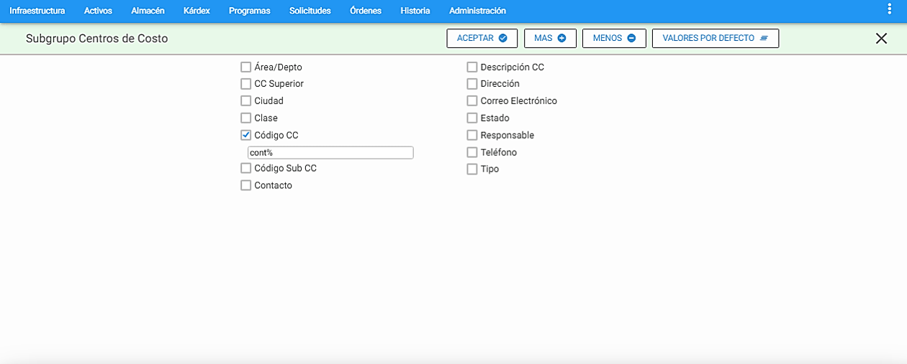 Imagen 9. Subgrupo Código CC
Código Sub CC: En este campo se filtra por el Sub CC asociado a un Centro de Costo.
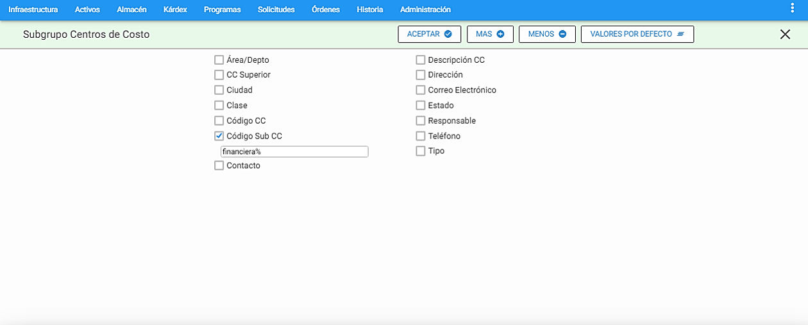 Imagen 10. Subgrupo Criterio Código Sub CC
Contacto: Filtra los CC que tengan asociada a una persona externa como contacto. Ejemplo: %maria josé% selecciona todos los Centros de Costo cuyo Contacto, en cualquier parte, tengan la palabra “maria josé”.
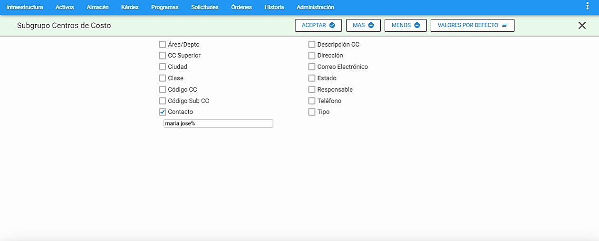 Imagen 11. Subgrupo Criterio Contacto
Descripción CC: Agrupa los CC cuya descripción corresponda a un Centro de Costo Interno o a un Cliente.
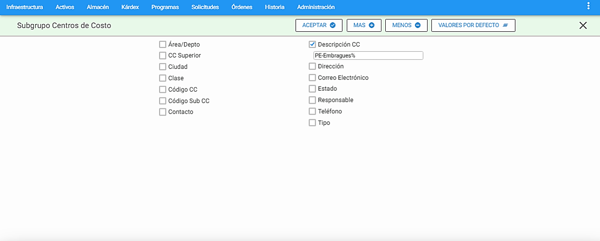 Imagen 12. Subgrupo Criterio Descripción CC
Dirección: Permite filtrar por la dirección del Área o Departamento asociada a los CC.
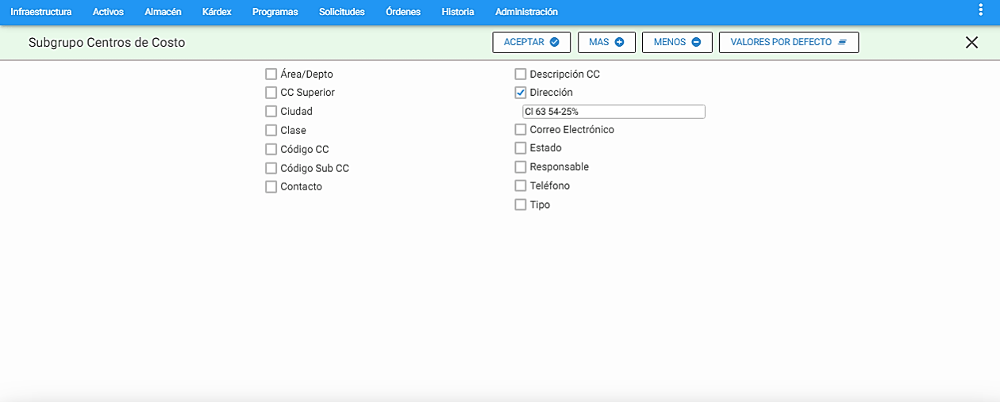 Imagen 13. Subgrupo Dirección
Correo Electrónico: Filtra la dirección electrónica asociada a un CC.
 Imagen 14. Subgrupo Criterio Correo Electrónico
Imagen 14. Subgrupo Criterio Correo Electrónico
Estado: Permite la selección de los CC de acuerdo al estado de Activo o Inactivo. El estado de los CC es importante para la selección en las listas desplegables. Por ejemplo: Si un CC, tiene definido el Estado “Inactivo”, esta no aparecerá en la lista de los Contratos, Terceros, módulos de Activos, Kárdex, Programas, Solicitudes de Servicio, Paros, Órdenes de Trabajo, Historia y Administración.
 Imagen 15. Subgrupo Criterio Estado
Imagen 15. Subgrupo Criterio Estado
Responsable: Filtra los CC (tipo: mantenimiento y usuario) cuyos responsables corresponden al diligenciado en el campo.
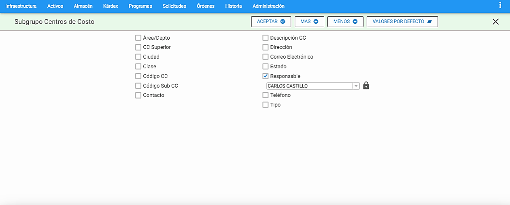 Imagen 16. Subgrupo Criterio Responsable
Teléfono: Filtra por el teléfono asociado a un CC.
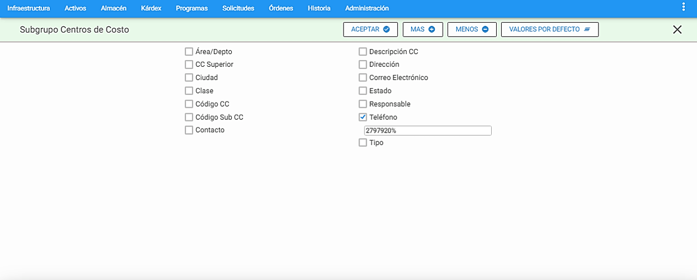 Imagen 17. Subgrupo Criterio Teléfono
Tipo: Agrupa los CC de acuerdo al tipo seleccionado.
 Imagen 18. Subgrupo Criterio Tipo
Imagen 18. Subgrupo Criterio Tipo
Centros Responsables
Son los centros especializados, encargados de ejecutar labores de mantenimiento. Se incluyen tanto los Centros Responsables de Mantenimiento propios de la empresa como los externos a ella (Contratistas y Talleres Externos).
Se define a través de su código y descripción según costumbre en la empresa. El código tiene un espacio reducido compuesto de trece caracteres; esto debido a la necesidad de asociar posteriormente a cada Centro Responsable el Oficio o Especialidad, o los Oficios o Especialidades que le pertenecen.
Cuando se trata de los Centros Responsables Internos de la organización existen varias alternativas de definición:
En primer lugar como Centros especialistas en cada uno de los tipos de mantenimiento: Mecánico, Eléctrico, Instrumentación u otros.
Pero pueden ser también Centros técnicos de mantenimiento multiobjetivo, conformados por especialistas de cada tipo de mantenimiento, que prestan servicio a uno o varios sectores productivos de la organización.
El AM administra los Centros Responsables de mantenimiento de la empresa cualquiera que sea su forma en la jerarquía organizacional.
Se debe definir además, como un Centro Responsable, al conjunto de Talleres o Servicios Externos que prestan servicio a la empresa, por solicitud y a elección de ella, sin que exista un compromiso previo contractual.
De igual forma, debe constituir un Centro Responsable el conjunto de Contratistas, externos, que prestan servicio a la empresa en forma permanente y rutinaria sobre bases contractuales.
Ejemplos de Centros Responsables:
Talleres Externos: Tall.Ext
Contratistas: Contrat
Mantenimiento Mecánico: Mtto.Mec
Taller Eléctrico: Tall.Elec
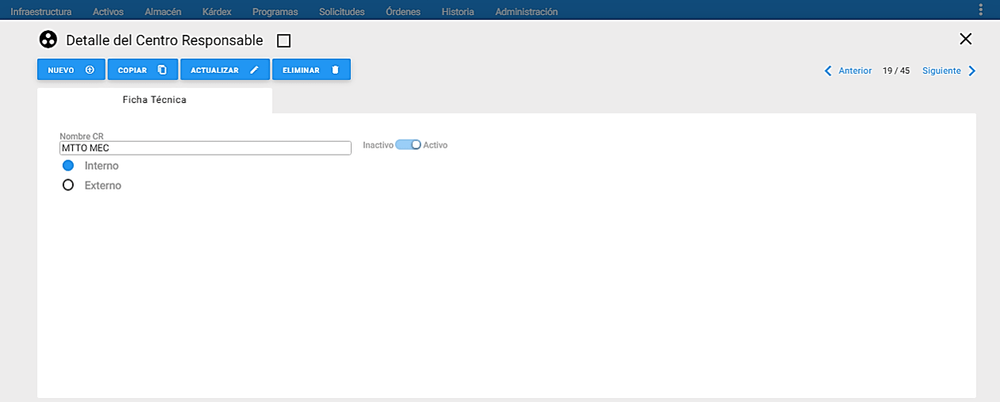 Imagen 19. Ventana Detalle Centro Responsable
En la gráfica anterior, Ventana Detalle Centro Responsable, se aprecian sus componentes y sus respectivos contenidos. Se encuentra la información relevante al Centro Responsable seleccionado en el Visor.
A continuación se describen los campos que componen el registro, sobre cada unos se da una breve explicación:
Nombre CR: En este campo se escribe el código del Centro Responsable, con una capacidad de 13 caracteres.
Estado: Es un campo para seleccionar un valor de los predefinidos, Activo o Inactivo que refleja el estado de ese Centro Responsable ante el aplicativo.
Tipo: Se elige si es un Centro Responsable de tipo Interno, sí es de la empresa; o tipo Externo, sí corresponde a un Taller/Servicio Externo o Contratista.
Oficios
Aquí se definen los Oficios o Cargos Técnicos de mantenimiento que el área de Relaciones Laborales de la empresa tiene registrados dentro de cada Centro Responsable.
En otras palabras esta es la tabla en la que se registran los nombres de los Cargos Técnicos de mantenimiento a los que se asocian posteriormente las personas de las áreas de
También se definen aquí las especialidades de los Talleres/Servicios Externos o de los Contratistas que prestan servicios de mantenimiento. Ejemplos: Talleres Eléctricos, Talleres Mecánicos, Talleres de Motores y Bombas; Contratistas de Aire Acondicionado, Contratistas de Mecanizado, Contratistas para Instalaciones de Redes, entre otros. Los oficios son requeridos por los Programas de Mantenimiento y las Órdenes de Trabajo.
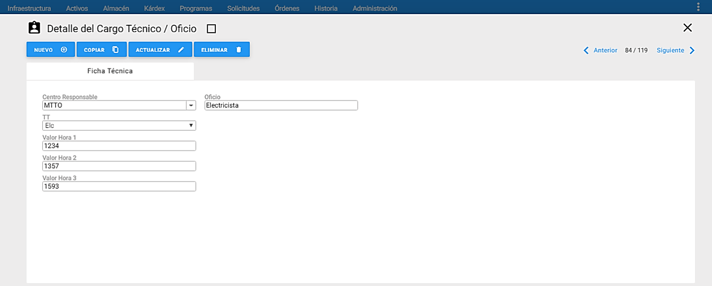 Imagen 20. Ventana Detalle Oficio
En la gráfica anterior, Ventana Detalle Oficios, se aprecian sus componentes y sus respectivos contenidos. Se encuentra la información relevante al Oficio seleccionado en el Visor.
A continuación se describen los campos que componen el registro, sobre cada campo se da una breve explicación:
Centro responsable: Este campo permite seleccionar un Centro Responsable preexistente, al cual pertenece el oficio. Se encuentran disponibles para la selección los Centros Responsables definidos en la tabla correspondiente.
Oficio: En este campo se definen los diferentes Oficios del personal de mantenimiento propio de la empresa o las Especialidades de los Talleres/Servicios Externos y Contratistas.
Tipo Trabajo (TT): Indica el tipo de trabajo al cual está relacionado el Oficio o la especialidad que se está definiendo. Elc (eléctrico), Mec (mecánico), I/E (instrumentación y electrónica), Otr (otros). Tanto la definición como la abreviatura, de cada Tipo de Trabajo, son configurables para una compañía, desde el módulo de Infraestructura, en la tabla llamada Tipos de Trabajo.
Valor Hora 1: En este campo se registra el valor de la Hora Ordinaria del Oficio referido. Es obligatoria definirla para los Oficios que estén relacionados a un Centro Responsable tipo interno.
Valor Hora 2: En este campo se registra el valor de la Hora Extra o Nocturna de Oficio referido.
Valor Hora 3: En este campo se registra el valor de la Hora Dominical o Festiva del Oficio referido.
Terceros
Almacena la información de cuatro tipos diferentes de entes terceros relacionados con el sistema.
Responsable Interno / Empleado (RI): Es el tipo de Tercero que denota a los trabajadores del área interna de mantenimiento de la compañía. Caben también en este tipo los empleados de la compañía que tienen bajo su responsabilidad algún objeto de mantenimiento definido en la módulo de Activos. Un ejemplo de ello, los conductores de vehículos de la empresa o los operarios de algún equipo.
Responsable Externo / Contratista (RX): Es el tipo de Terceros, responsables de la ejecución de tareas de mantenimiento, como entes externos a la empresa, en la categoría de Contratistas, de Talleres Externos o de Servicios Externos de Mantenimiento. Un ejemplo, los proveedores de servicio de mantenimiento de ascensores, de calderas, o de aire comprimido, cuando son Talleres Externos, expertos, llamados por solicitud, o cuando actúan según términos definidos en un contrato de servicios.
Proveedor / Fabricante (PF): En este grupo se registran los proveedores, en todas sus modalidades, los fabricantes de los Activos/Equipos o de los objetos de mantenimiento. También caben aquí los proveedores de Repuestos y de materiales de la organización.
Otro Tipo de Tercero (OT): Este grupo está abierto para definir otros tipos de Terceros requeridos por condiciones particulares de cada organización. Únicamente se puede usar en conjunto con el tipo RI, para indicar que son usuarios solicitantes.
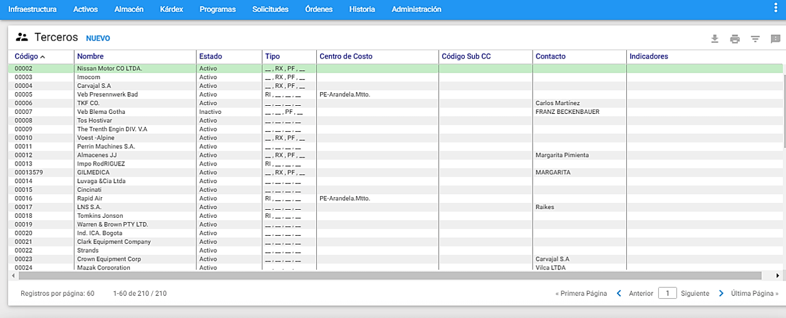 Imagen 211. Ventana IF Visor Terceros
En la porción de la ventana Visor de Terceros que se aprecia en la gráfica aparecen las columnas correspondientes a los campos más significativos de esta tabla. Al seleccionar un registro de esta ventana, se muestra la ventana Detalle con la información completa del Tercero seleccionado.
 Imagen 22. Ventana Detalle Tercero
Imagen 22. Ventana Detalle Tercero
En la ventana Detalle de Terceros se encuentra toda la información relevante del Tercero seleccionado en el Visor. Es una ventana que de no visualizarse completa debe ser recorrida con la ayuda de la barra de desplazamiento vertical.
A continuación se describen los campos que componen el registro. No todos ellos son obligantes. Sobre cada campo se da una breve explicación: su contenido y diversas recomendaciones para su registro correcto y consistente en la base de datos.
Código (de Tercero): En este campo se escribe el código de Tercero Externo, para el caso de los contratistas, proveedores y fabricantes, se usa normalmente el NIT o el RUT, o cualquier otro código de identificación nacional, único ante los sistemas fiscal, tributario y financiero. Cuando se trate de personal propio de la empresa se debe escribir el número de su cédula de ciudadanía o un número interno de carné o de identificación personal.
Nombre: En este segundo campo se escribe el nombre con el que se identifica el Tercero. Es posible escribir los nombres tipo título: La primera letra de cada nombre en mayúscula y las siguientes en minúsculas, o en otro caso con todo el texto en mayúsculas.
Estado: En este campo se asigna si el tercero está activo o inactivo. Es importante utilizar este campo cuando se quiera identificar el personal que está en vacaciones, incapacitado, en comisión, suspendido, retirado de la empresa u otro.
Tipo: Este campo permite identificar claramente la actividad y relación del Tercero con la empresa. Un Tercero puede tener varias relaciones con la empresa, relaciones que se establecen seleccionando una o varias posibilidades en las casillas correspondientes. Se han definido los siguientes tipos de Tercero:
- Responsable Interno / Empleado (RI)
- Responsable Externo / Contratista (RX)
- Proveedor / Fabricante (PF)
- Responsable Interno y Otro (RI-OT)
- Responsable Externo y Proveedor / Fabricante (RX-PF)
Cuando se selecciona cualquiera de los dos primeros tipos de Tercero (Responsable), es necesario identificar el Oficio que realiza el Tercero. Para esto el programa permite desplegar todos los Cargos Técnicos/Oficios que han sido ingresados previamente al sistema.
El programa permite seleccionar solo uno de dos: Responsable Interno o Responsable Externo. En ambos casos el sistema solicita a continuación el nombre del Oficio o de la especialidad del Tercero.
Nota: Un Responsable Interno (RI) no puede ser al tiempo Proveedor (PF) de la compañía, entonces ésta combinación está inhabilitada.
Oficio: En este campo se selecciona de la lista despegable, el oficio o cargo técnico o especialidad del Tercero. Al seleccionar un Oficio, el programa muestra automáticamente el nombre del Centro Responsable al que está asociado el Oficio.
Contacto: En este campo se ingresa, para el caso de contratistas y proveedores, el nombre de la persona representante del Tercero ante la empresa. Para el caso de Terceros internos es posible ingresar el mismo nombre del Tercero, o de un representante de su área, o de la secretaria del área o es posible también dejarlo en blanco.
Correo Electrónico: En este campo se escribe la dirección electrónica del Tercero.
Dirección: En este campo se diligencia la dirección donde se localiza el Tercero.
Ciudad y País: Aparecen dos campos, en los cuales debe ir la siguiente información:
En el primer campo se escribe la ciudad donde está ubicado el Tercero. En el segundo campo se escribe el país.
Teléfonos: Aparecen dos campos para dos números telefónicos: Teléfono 1 y Teléfono 2, disponibles para números fijos.
Cuando se vaya a escribir un número telefónico es importante tener en cuenta que los tres primeros dígitos que se escriban deben corresponder al indicativo de la ciudad o del área. El programa automáticamente escribirá estos tres dígitos dentro de un paréntesis. Los siguientes siete dígitos corresponden al número de teléfono y a partir del octavo dígito corresponde al número de la Extensión telefónica (si aplica). El programa automáticamente escribe la palabra Ext.
Centro de Costo: En este campo se selecciona, de la lista despegable, el centro de costo al que pertenece el Tercero. Si es un Tercero tipo RI, lista los Centros de Costo tipo Mantenimiento; si es un Tercero tipo RI-OT, lista los Centros de Costo tipo Usuario; si es un Tercero tipo RX o RX-PF, lista los Centros de Costo tipo Externo.
Código Sub CC: Este campo siempre está bloqueado y muestra el Código Sub CC asociado al Centro de Costo elegido.
Ingreso y Retiro: En el primer campo se escribe la fecha en la cual se hizo el ingreso del Tercero al sistema. En el segundo se ingresa la fecha de retiro del Tercero.
Comentario: Aquí se ingresan los comentarios sobre un Centro de Costo o sobre un Cliente, representado por su Centro de Costo o bien para hacer aclaraciones sobre el Tercero.
Certificaciones Terceros
Esta nueva funcionalidad se usa para realizar un seguimiento detallado a los Terceros que tienen documentaciones con vigencias y que son cumplimiento de normas. El objetivo de esta funcionalidad es que a los Terceros tipos RI y RX, se les pueda anexar documentación y que el sistema le informe al usuario si ese Tercero está habilitado para hacer labores de mantenimiento en la institución, en particular, cuando las labores a realizar están relacionadas con la documentación anexada vigente. Dependiendo del tipo de Tercero, se habilita una pestaña al lado derecho de la Ficha Técnica del Tercero que se está definiendo y es en esta nueva pestaña que se relaciona la información mencionada. Para ingresar a esta opción se recomienda tener ingresado el Tercero en la tabla, se debe dar clic a la pestaña de Certificaciones para un tipo RI o a la pestaña de Técnicos para un tipo RX.
Certificaciones Terceros Tipo RI
A continuación la explicación de las Certificaciones de Terceros tipo RI, cuya finalidad es que el usuario pueda asociar información importante del responsable ejecutor de la institución como hoja de vida, documento, tarjeta profesional, pasantías, cursos, registro Invima, entre otros.
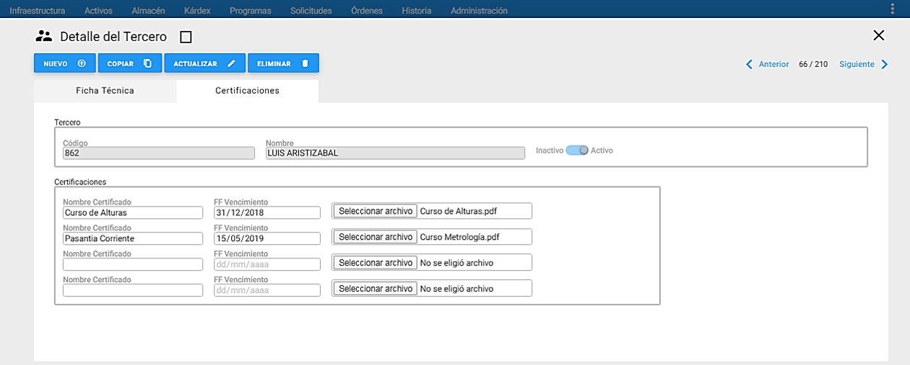 Imagen 23. Certificaciones TE
En la gráfica anterior, pestaña Certificaciones, se aprecian sus componentes y sus respectivos contenidos. En la ventana Detalle de Terceros se encuentra la información relevante a la Certificación del Tercero seleccionado en el Visor.
A continuación se describen los campos que componen el registro. Sobre cada campo se da una breve explicación.
Nombre Certificado: En este campo se escribe el nombre del documento a adjuntar.
FF Vencimiento: En este campo se elige la fecha de vencimiento del documento a adjuntar.
Adjuntar Documentos: Para adjuntar el documento, se debe dar clic a Seleccionar archivo, se observa que se abre el explorador de archivos, luego debe seleccionarse a través de un doble clic o dando un clic al botón Abrir, al lado derecho del campo se observa que se muestra el nombre del archivo adjuntado, para insertar o actualizar los datos en esta tabla se da clic en el botón Abrir.
Para actualizar la información de alguna certificación, se ingresa la nueva información en los campos correspondientes y se termina el proceso con el botón Actualizar . Si se desea desasociar la información de una certificación de un Técnico, se debe dar clic al icono de que está al lado izquierdo del documento anexo, donde se muestra un mensaje de alerta que indica al usuario de sí está seguro de eliminar el registro y se da clic en Aceptar.
Certificaciones Terceros Tipo RX
A continuación la explicación de los Técnicos de Terceros tipo RX, cuya finalidad es que el usuario pueda asociar información importante del responsable ejecutor contratista o servicio externo como hoja de vida, documento, tarjeta profesional, pasantías, cursos, registro Invima, entre otros.
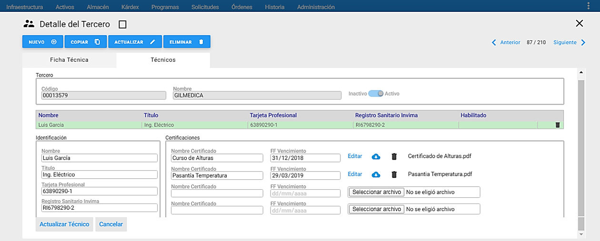 Imagen 24. Técnicos
En la gráfica anterior, pestaña Técnicos, se aprecian sus componentes y sus respectivos contenidos. En la ventana Detalle de Terceros se encuentra la información relevante al Técnico del Tercero seleccionado en el Visor.
A continuación se describen los campos que componen el registro. Sobre cada campo se da una breve explicación.
Nombre: En este campo se escribe el nombre propio de la persona que ejecutará las labores de mantenimiento a la institución.
Título: En este campo se registra el cargo técnico u oficio de la persona que ejecutará las labores de mantenimiento a la institución.
Tarjeta Profesional: En este campo se digita el número de la Tarjeta Profesional de la persona que ejecutará las labores de mantenimiento a la institución.
Registro Sanitario Invima: En este campo se escribe el número del Registro Sanitario Invima de la persona que ejecutará las labores de mantenimiento a la institución actual.
Requiere Certificación: Este switche permite que al vencerse cualquier documento de una persona, se asigne una pelota de color rojo o verde, para indicar que se encuentra activo, en la columna “Habilitado” de la tabla de Técnicos y en la ventana visor de Terceros. El objetivo es que el usuario pueda enterarse con antelación de los vencimientos de los documentos de las personas que ejecutarán las labores de mantenimiento a la institución.
Nombre Certificado: En este campo se escribe el nombre del documento a adjuntar.
FF Vencimiento: En este campo se elige la fecha de vencimiento del documento a adjuntar.
Adjuntar Documentos: Para adjuntar el documento, se debe dar clic al botón Seleccionar archivo. Se observa que se abre una ventana para buscar el archivo y se selecciona dando doble clic o clic al botón Abrir, al lado derecho del campo se observa que se muestra el nombre del archivo adjuntado, para insertar o actualizar los datos en esta tabla se da clic en el botón Más o Actualizar Técnico, que solo aplica cuando el registro ya existe. Para finalizar el proceso, en ambos casos, se debe dar clic al botón Actualizar .
Para registrar un nuevo técnico se da clic en el botón Adicionar Técnico, ubicado en la parte inferior izquierda de la tabla Técnicos. Para actualizar la información de alguno de los técnicos, primero se selecciona el técnico en la tabla, se observa que se muestra la información detallada de ese técnico, se procede a actualizar los campos, luego dar clic al botón Actualizar Técnico y finalmente terminar el proceso de actualización con el botón Actualizar de la parte superior izquierda. Si se desea desasociar la información de una certificación de un Técnico, se debe dar clic al icono de que está al lado derecho del documento anexo, sale mensaje de alerta que indica al usuario de sí está seguro de eliminar el registro y se da clic en Aceptar.
Indicadores
Es posible visualizar de manera inmediata, los Terceros habitados e inhabilitados, directamente desde la ventana visor, a través de la columna “Indicadores” que muestra una pelota de color que indica su estado. El significado del color de cada pelota, se puede ver en el recuadro de Indicadores ubicado en la parte superior derecha de la ventana visor, como se muestra a continuación:
 Imagen 25. Indicadores Terceros
Imagen 25. Indicadores Terceros
El significado de los colores se visualiza al sobreponer el mouse en el icono que se encuentra al extremo superior derecho y su correspondencia es:
- Verde: Terceros con certificaciones que tienen fecha de vencimiento posterior a la fecha actual, es decir, se encuentran con sus certificaciones habilitadas
- Rojo: Terceros con certificaciones que tienen fecha de vencimiento anterior a la fecha actual, es decir, se encuentran con una o varias certificaciones inhabilitadas.
Subgrupo Terceros
Se usa para seleccionar grupos de Terceros que cumplen un conjunto de filtros o criterios. El objetivo para hacerlo es realizar un estudio posterior sobre los registros seleccionados en el subgrupo. Para ingresar a esta opción se debe dar clic al , ubicado en la parte superior derecha de la ventana Visor de Terceros.
 Imagen 26. Subgrupos
Imagen 26. Subgrupos
AM mantiene activo cualquier subgrupo en cada módulo, hasta que el usuario lo modifique o restablezca los valores estándar.
Cada criterio trabaja en conjunto con los demás, con el operador intersección.
Cada criterio aparece inicializado en un valor global que permite mostrar todos los Terceros. Lo que significa que de no escoger un criterio se obtiene como resultado del subgrupo el mismo conjunto completo de todos los Terceros.
El programa permite hacer selección de un grupo de Terceros de acuerdo con los criterios seleccionados en la siguiente ventana:
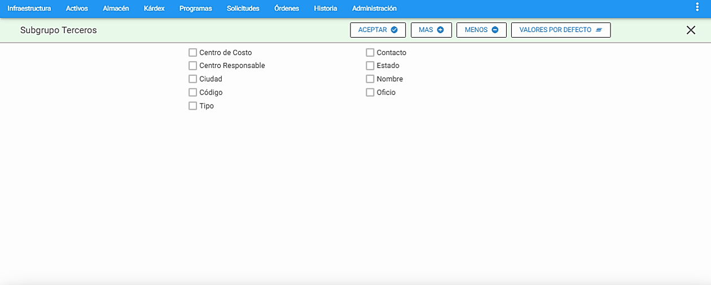 Imagen 27. Ventana Subgrupo Terceros
Los campos de datos que constituyen los criterios de selección son los siguientes:
Centro de Costo: Se elige de la lista el Centro de Costo al que pertenece el Tercero.
Centro Responsable: Lista los centros responsables registrados en el sistema.
 Imagen 28. Subgrupo Criterio Centro Responsable
Imagen 28. Subgrupo Criterio Centro Responsable
También se puede elegir el centro responsable o un grupo de centros responsables mediante el uso de comodines, para ello, se debe dar clic al icono . Ejemplo, si se escribe %adm%, el sistema entiende que debe seleccionar aquellos Terceros cuyo centro responsable tenga incluida la secuencia “adm”.
Ciudad: Permite la selección de la ciudad donde se encuentre un Tercero.
Código: Esta selección agrupa los Terceros relacionados por su código. Por ejemplo: si se escribe 98%, el sistema localiza aquellos Terceros cuyo código empieza por 98. El porcentaje a continuación, es un carácter comodín que significa “todos”.
Tipo: Filtra los Terceros de Tipo Responsable Interno, Responsable Externo, Proveedor/Fabricante u Otro, al dar clic en uno o algunos de los cuadros de selección.
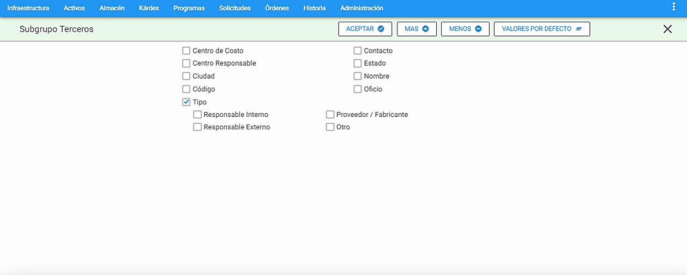 Imagen 29. Subgrupo Criterio Tipo
Contacto: Permite la selección de los Terceros que tengan un contacto asociado, ya sea el mismo nombre del Tercero o el nombre de la persona representante de la empresa.
Estado: Permite la selección de los Terceros de acuerdo al estado de Activo o Inactivo. El estado de los Terceros es importante para la selección en las listas desplegables. Por ejemplo: Si un Tercero de tipo RI, tiene definido el Estado “Inactivo”, este no aparecerá en la lista de los Responsables de la OT.
Nombre: Selecciona los Terceros según criterios basados en su Nombre. Ejemplo: %Manuel% selecciona todos los Terceros en cuyo nombre, en cualquier parte, tengan la palabra “Manuel”.
Oficio: Muestra los Terceros que tengan asignados el Oficio seleccionado.
 Imagen 30. Subgrupo Criterio Oficio
Imagen 30. Subgrupo Criterio Oficio
De igual forma, se puede elegir el oficio mediante la opción utilizar comodines, para ello, se debe dar clic al icono . Esta selección agrupa los Terceros relacionados por su oficio. Por ejemplo: si se escribe ayudante%, el sistema localiza aquellos Terceros cuyo oficio empieza por la palabra “ayudante”.
Nota: Es importante tener en cuenta que cuando se están realizando los subgrupos se pueden utilizar uno o varios de los criterios anteriores simultáneamente. Además, es posible hacer unión de selecciones. Esto significa que inmediatamente después de haber realizado una selección es posible hacer otra y unir el resultado de las dos. Para ello, tras definir los criterios de la segunda selección se da un clic al botón Mas , en lugar de darlo al botón aceptar .
Responsables
Aquí se registran automáticamente los nombres propios de las personas definidas para cada Oficio o los nombres o razones sociales de los Talleres/Servicios Externos o Contratistas, definidos para cada grupo o Especialidad.
Se visualiza la información sobre cada Empleado o Taller o Contratista.
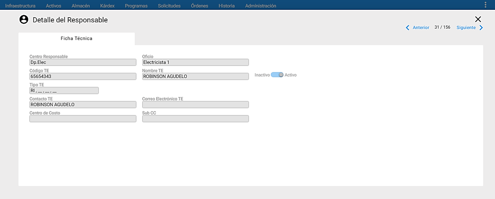 Imagen 31. Ventana Detalle Responsable
En la gráfica anterior, Ventana Detalle del Responsable, se aprecian sus componentes y sus respectivos contenidos. Se encuentra la información relevante al Responsable seleccionado en el Visor.
A continuación se describen los campos que componen el registro, sobre cada campo se da una breve explicación:
Centro Responsable: En este campo se muestra el Centro Responsable asociado al Responsable.
Oficio: En este campo se muestra el Oficio al cual pertenece el Responsable.
Código TE: En este campo se muestra el código del Tercero definido en su tabla. De esta forma se establece la relación entre el Responsable y su Oficio, y mediante este último con el Centro Responsable.
Nombre TE: En este campo se muestra el nombre del Tercero definido en su tabla.
Tipo TE: En este campo se muestra el tipo del Tercero definido en su tabla.
Contacto TE: En este campo se muestra el contacto del Tercero definido en su tabla.
Correo Electrónico TE: En este campo se muestra el correo electrónico del Tercero definido en su tabla.
Centro de Costo: En este campo se muestra el nombre del Centro de Costo del Tercero definido en su tabla.
Sub CC: En este campo se muestra el código del Sub CC que está relacionado al Centro de Costo definido en el campo anterior.
Estado: Es un campo que muestra un valor de los predefinidos, Activo o Inactivo que refleja el estado de ese Responsable ante el aplicativo mediante un switche.
Ubicaciones Físicas
Es la lista de las áreas físicas que conforman el “Layout” de la planta de producción (Industria, Manufactura) o de la planta de servicios (Hoteles, Hospitales, Banca) o simplemente de las facilidades que conforman las instalaciones que son objetos de mantenimiento.
El concepto de Ubicaciones Físicas es netamente de geografía, diferenciado completamente del concepto de Activo y de Centro de Costo, además la ubicación física puede estar en forma activa o inactiva dentro de AM. En ocasiones un Centro de Costo corresponde a una Ubicación Física pero en muchas otras no es así. De igual forma en ocasiones un Activo/Equipo o unidad funcional caracteriza a la ubicación física pero en muchas otras no. Por esta razón los tres conceptos se definen independientemente en AM con la posibilidad de relacionarlos en distintos contextos.
Para ilustrar mejor este concepto definimos a continuación algunos ejemplos de Ubicaciones Físicas.
- Planta de Acabados.
- Empaque Planta de Acabados.
- Pesaje Edificio de Administración.
- Edificio de Administración, Oficinas.
- Edificio de Administración. Laboratorio Químico.
- Edificio de Administración. Laboratorio Textil.
- Almacén General.
- Almacén de Materia Prima.
- Almacén de Materiales y Repuestos.
- FC-Fundición.
- FC-Fundición. Fleje FC-Fundición. Hornos.
- FC-Fundición. Línea 1.
- FC-Fundición. Línea 1.Fresado.
- FC-Fundición. Línea 2.
- FC-Fundición. Línea 2.Fresado.
- FC-Fundición. Puente Grúa.
- FC-Fundición. Sostenimiento.
Se recomienda utilizar los nombres de las Ubicaciones Físicas que la cultura empresarial ha acostumbrado manejar. Existe disponible un espacio de cincuenta caracteres en la descripción de la Ubicación Física. Es posible también mezclar una porción de código y lenguaje natural.
En el ejemplo anterior FC es el apócope de una planta en una fábrica. Esta planta a su vez está conformada por varios departamentos de proceso, uno de los cuales es Fundición, que a su vez se compone por varias secciones como Fleje, Hornos, las Líneas de proceso y la sección de Sostenimiento.
Cuando la Ubicación Física es un criterio para seleccionar en un subgrupo en Activos o en Órdenes de Trabajo activas o históricas, es posible referenciar una Ubicación Física global, así:
FC-Fundición%: Se refiere a todas las secciones que conforman el departamento de fundición.
FC%: Se refiere a todas las secciones de todos los departamentos de la Planta FC.
El registro de las Ubicaciones Físicas es muy importante, pues ellas serán invocadas desde muchas ventanas de otras opciones del Menú Principal como Activos, Almacenes, Órdenes de Trabajo, Solicitudes de Servicio, Paros e Historia de Mantenimiento.
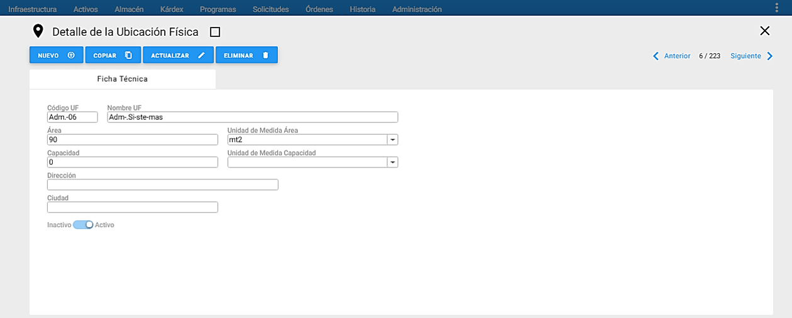 Imagen 32. Ventana Detalle UF
En la gráfica anterior, Ventana Detalle Ubicaciones Físicas, se aprecian sus componentes y sus respectivos contenidos. Se encuentra la información relevante al Técnico del Tercero seleccionado en el Visor.
A continuación se describen los campos que componen el registro. Sobre cada campo se da una breve explicación:
Código UF: Se define un código o indicativo único para la ubicación física, que puede ser un consecutivo. Ejemplo: UF-001, el cual UF corresponde a las abreviaturas de Ubicación Física y 001 corresponde al primer registro.
Nombre UF: Se hace el registro de la descripción de la Ubicación Física. El campo tiene hasta un máximo de 50 caracteres.
Área (opcional): Se escribe el área de la Ubicación Física. Este campo es númerico.
Unidad de Medida Área: Se elige la Unidad de Medida utilizada para definir la capacidad del área; para ello se selecciona uno de los valores predefinidos en esa tabla.
Capacidad (opcional): Se escribe la capacidad de la Ubicación Física, si es requerida, es un concepto de importancia relativa a la organización. Por ejemplo, información sobre capacidad en número de personas o de escritorios o de computadores o de máquinas-herramienta o de cabezas de ganado o árboles puede ser incluida aquí.
Unidad de Medida Capacidad: Se elige la Unidad de Medida utilizada para definir la capacidad del área; para ello se selecciona uno de los valores predefinidos en esa tabla.
Estado: El campo estado se utiliza para definir si la UF actual se encuentra Activa o Inactiva. Este Estado se utiliza para posibilitar o inhabilitar el despliegue de UF en otros contextos (Activos, OT, PM, SS, etc.). De esta forma, una UF inactiva NO aparece al intentar crear Activos, OT u otros.
Nota: La dirección y la ciudad son campos que son configurados en el módulo de Administración en la transacción Valores por Defecto.
Subgrupo Ubicaciones Físicas
Se usa para seleccionar grupos de Ubicaciones Físicas que cumplen con un conjunto de filtros o criterios. El objetivo para hacerlo es realizar un estudio posterior sobre los registros seleccionados en el subgrupo. Para ingresar a esta opción se debe dar clic al icono de filtro , ubicado en la parte superior derecha de la ventana Visor de Ubicaciones Físicas.
 Imagen 33. Ventana Visor UF
Imagen 33. Ventana Visor UF
AM mantiene activo cualquier subgrupo en cada módulo, hasta que el usuario lo modifique o restablezca los valores estándar.
Cada criterio trabaja en conjunto con los demás, con el operador intersección.
Cada criterio aparece inicializado en un valor global que permite mostrar todas las Ubicaciones Físicas. Lo que significa que de no escoger un criterio se obtiene como resultado del subgrupo el mismo conjunto completo de todas las Ubicaciones Físicas.
El programa permite entonces hacer selección de un grupo de Ubicaciones Físicas:
 Imagen 34. Subgrupo UF
Imagen 34. Subgrupo UF
Los campos de datos que constituyen los criterio de selección haciendo parte de la Ventana Subgrupo son los siguientes:
Área: Filtra las UF que tienen la cantidad de área ingresada en el campo.
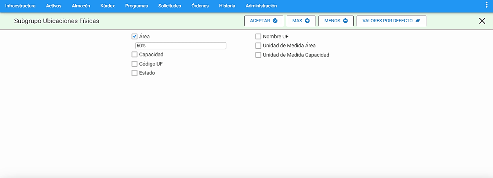 Imagen 35. Subgrupo UF Criterio Área
Capacidad: Filtra las UF que tienen la cantidad de capacidad ingresada en el campo.
 Imagen 36. Subgrupo UF Criterio Capacidad
Imagen 36. Subgrupo UF Criterio Capacidad
Código UF: Esta selección agrupa las UF relacionados por su código. Por ejemplo: si se escribe UF-12%, el sistema localiza aquellas UF cuyo código empieza por UF-12. El porcentaje a continuación, es un carácter comodín que significa “todos”.
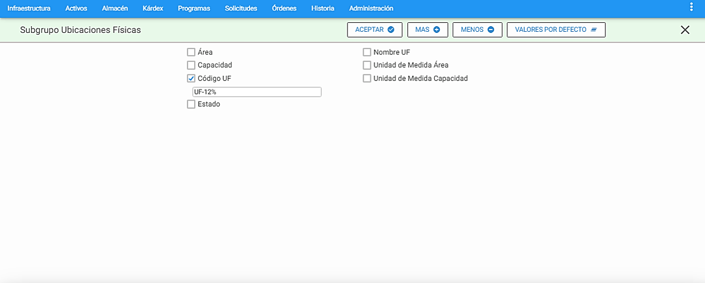 Imagen 37. Subgrupo UF Criterio Código UF
Estado: Permite la selección de las UF de acuerdo al estado de Activo o Inactivo. El estado de las UF es importante para la selección en las listas desplegables. Por ejemplo: Si una UF, tiene definido el Estado “Inactivo, esta no aparecerá en la lista de las Ubicaciones Físicas de los módulos de Activos, Solicitudes de Servicio, Paros, Órdenes de Trabajo, Historia y Almacén.
 Imagen 38. Subgrupo UF Criterio Estado
Imagen 38. Subgrupo UF Criterio Estado
Nombre UF: Selecciona las UF según criterios basados en su Nombre. Ejemplo: %Planta% selecciona todas las UF en cuyo nombre, en cualquier parte, tengan la palabra “Planta”.
 Imagen 39. Subgrupo UF Criterio Nombre UF
Imagen 39. Subgrupo UF Criterio Nombre UF
Unidad de Medida Área: Lista las Unidades de Medida registradas en la tabla de Unidades de Medida, se elige una de la lista.
También se puede elegir la unidad de medida mediante el uso de comodines, para ello, se debe dar clic al icono de candado , a continuación este ícono se muestra abierto y permite escribir. Ejemplo, si se escribe metros%, el sistema entiende que debe seleccionar aquellas UF cuya unidad de medida comience por la palabra “metros”. El porcentaje a continuación, es un carácter comodín que significa “todos”, como se indica a continuación:
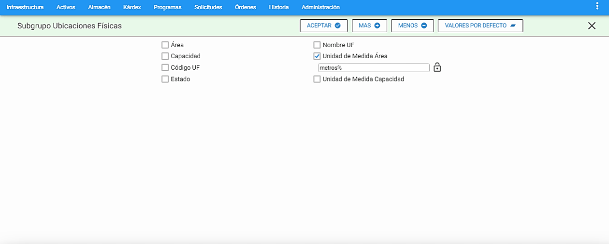 Imagen 40. Subgrupo UF Criterio Unidad de Medida Área
Unidad de Medida Capacidad: Busca las Ubicaciones Físcas que tengan definido este campo. Las Unidades de Medida que se despliegan en la lista están registradas en la tabla de Unidades de Medida. Se elige de la lista la Unidad de Medida deseada.
También se puede elegir la unidad de medida mediante el uso de comodines, para ello, se debe dar clic al icono candado , a continuación este ícono se muestra abierto y permite escribir. Ejemplo, si se escribe la palabra bloques%, el sistema realiza una búsqueda de aquellas UF que en cualquier parte del campo tengan el nombre de la palabra digitada, en este caso, la palabra “bloques”, como se muestra a continuación:
 Imagen 41. Subgrupo UF Criterio Área
Imagen 41. Subgrupo UF Criterio Área
Nota: Es importante tener en cuenta que cuando se están realizando los subgrupos se pueden utilizar uno o varios de los criterios anteriores simultáneamente. Además es posible hacer unión de selecciones. Esto significa que inmediatamente después de haber realizado una selección es posible hacer otra y unir el resultado de las dos. Para ello, tras definir los criterios de la segunda selección se da un clic al botón Mas , en lugar de darlo al botón aceptar .
Contratos
En esta tabla es posible registrar los Contratos sobre servicios a cargo de contratistas externos. No se trata de un módulo de administración de contratos sino de una facilidad simplista que hace funciones de control y seguimiento generales sobre ellos.
Al tiempo, se usa para facilitar la selección y búsqueda de Órdenes de Trabajo e Historia de Mantenimiento, en función de un contratista y/o de un Contrato particular.
Aunque el objetivo general es el registro de los contratos anuales, también es posible registrar, en aras de centralización de la información, los contratos de corta vigencia que respaldan la ejecución de una o varias Órdenes de Trabajo por parte de un contratista.
También es posible realizar el seguimiento de la vigencia de los Contratos, directamente desde la ventana visor, a través de la columna “Indicadores” que muestra una pelota de color que indica su estado de vigencia acuerdo a la cantidad de días o meses. El significado del color de cada pelota, se puede ver en el ícono de Indicador , ubicado en la parte superior derecha de la ventana visor.
 Imagen 42. Ventana Visor Contratos
Imagen 42. Ventana Visor Contratos
La renovación de contratos se realiza utilizando la numeración del contrato anterior, realizando una copia y adicionando un consecutivo adicional que relacione esta renovación con su contrato original.
Ejemplo: Código 00008 (contrato original), Código 00008-1 (renovación del contrato)
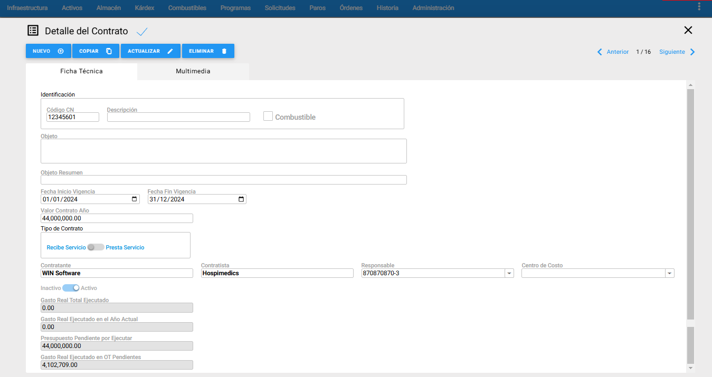 Imagen 43. Ventana Detalle del Contrato
En la gráfica anterior, Ventana Detalle del Contrato, se aprecian sus componentes y sus respectivos contenidos. Se encuentra la información relevante al Contrato seleccionado en el Visor.
A continuación se describen los campos que componen el registro, sobre cada campo se da una breve explicación:
Código CN: En este campo que tiene una capacidad de quince caracteres se registra el número del Contrato. Es posible cambiar el código del contrato sin afectar la asociación existente entre el contrato modificado y otros módulos, y sin obtener mensajes de error por este intento de modificación.
Descripción: En este campo se escribe una corta descripción del Contrato que se está definiendo.
Objeto: En este campo se establece la finalidad del Contrato acordado por las partes.
Objeto Resumen: En este campo se escribe un resumen del Objeto del Contrato definido en el campo anterior.
Fecha Inicio Vigencia: En este campo se define la fecha en la que se da inicio a la vigencia del Contrato.
Fecha Fin Vigencia: En este campo se define la fecha en la que está prevista la terminación de la vigencia del Contrato.
Valor Contrato Año: En este campo se indica el valor total anual del Contrato. Se habla de Valor Contrato Año refiriéndose a aquellos Contratos que se realizan anualmente, por ejemplo, el mantenimiento anual de los aires acondicionados. En otros casos se refiere al costo total del contrato durante su vigencia.
Responsable: Aquí se registra el nombre propio o la razón social de la persona natural o jurídica que es Responsable, como contratista, del manejo y ejecución del contrato. Los contratistas que se registran en esta tabla deben haber sido creados previamente en la tabla de Terceros, y su tipo debe ser Responsable Externo / Contratista (RX).
Centro de Costo: Para registrar el código correspondiente al Cliente externo al que se le presta servicio a través del Contrato. Este campo no tiene ninguna incidencia en otros casos.
Sub CC: Este campo siempre está bloqueado y muestra el Código Sub CC asociado al Centro de Costo elegido.
Estado: Se selecciona el estado del contrato, puede encontrarse Activo o Inactivo.
Gasto Real total ejecutado: Como su nombre lo indica, este campo muestra el valor total real gastado hasta la fecha de dicho contrato.
Gasto Real ejecutado en el año actual: Este campo muestra el valor total real gastado en el periodo del año en curso de dicho contrato.
Presupuesto Pendiente por ejecutar: Muestra cuanto valor le resta a dicho contrato para terminar.
Gasto Real ejecutado en OT pendientes: En este campo se muestra el valor total del gasto real en OT cuyo estado se encuentra pendiente.
Multimedia: Contratos
Esta nueva funcionalidad permite asociar el Contrato de forma digital.
 Imagen 44. Ventana Detalle del Contrato (Multimedia)
Imagen 44. Ventana Detalle del Contrato (Multimedia)
En la gráfica anterior, Porción Multimedia del Contrato, se aprecian sus componentes y sus respectivos contenidos.
A través de la ventana Multimedia se adjunta información adicional al Contrato en cada una de sus carpetas asignadas. Esta opción permite asociar al Contrato, uno o varios documentos, con el objetivo de facilitar el trabajo a realizar, o guiarlo, o detallarlo minuciosamente. Se aceptan documentos de extensiones .DOC, XLS, PDF, JPG, es decir, de Microsoft Word o Microsoft Excel, Acrobat o Imágenes varias.
Los documentos anexos pueden contener: el Contrato en forma digital, especificaciones detalladas, entre otros; con el fin de hacer seguimiento, control y tener acceso directo a la información.
A continuación se describen las carpetas que componen esta ventana; cuando se quiera actualizar o ingresar nueva información al Contrato, se deberán registrar así:
Cuadro Identificación: Aparece con los campos bloqueados para que el usuario visualice la información básica del Contrato como el Código y la Descripición.
Documentos: En esta carpeta se relacionan toda clase de documentación relacionada al Contrato. Ejemplo: Archivos en Word, pdf, Excel, entre otros.
Imágenes: En esta carpeta se relacionan toda clase de imágenes relacionadas al Contrato. Ejemplo: Imágenes en formato jpg, png, entre otros.
Videos: En esta carpeta se relacionan porciones de videos relacionados al Contrato. Ejemplo: Videos en formato wmv, mp4, entre otros.
Para adicionar un documento, imagen o video, se debe dar acceder a la carpeta deseada a través de un doble clic, luego se da clic al icono de nube y a continuación se abre el explorador de archivos, se selecciona el archivo y se da clic en abrir, como se muestra a continuación:
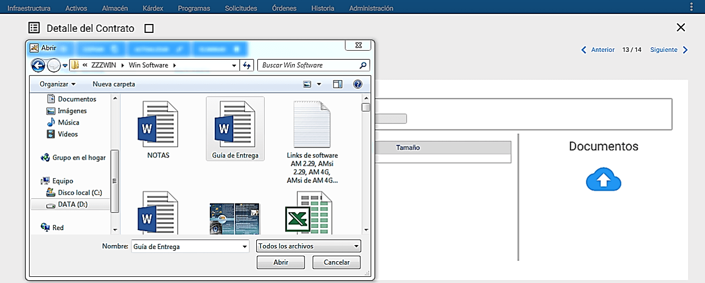 Imagen 45. Contrato Porción Multimedia
Una vez se da clic en abrir se evidencia al lado derecho el nombre del archivo elegido y aparece un campo en blanco, para que el usuario escriba un nombre adicional del archivo para ser usado como una referenciación del archivo adjunto. Luego, se da clic en el botón Subir archivo.
 Imagen 46. Adjuntar un Archivo
Imagen 46. Adjuntar un Archivo
Los archivos que se van adicionando van quedando guardados uno debajo del otro y si se da un clic en uno de las imágenes, se visualiza la imagen adjunta.
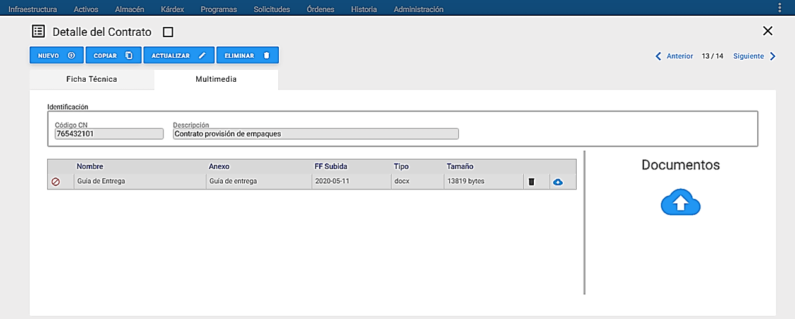 Imagen 47. Archivo adjunto
Para desasociar un documento, o una imagen o un video, al Contrato se da clic al ícono de Basura que se encuentra al lado derecho del archivo al que se le va a realizar la operación. Inmediatamente, sale un mensaje de alerta que pregunta al usuario si está seguro de eliminar este registro y se da clic en el botón Aceptar.
 Imagen 48. Eliminar un archivo
Imagen 48. Eliminar un archivo
Si se desea descargar un archivo adjunto al Contrato, se debe dar clic en el icono de nube con flecha hacia abajo que se encuentra al lado derecho del archivo que se quiere descargar, como se muestra a continuación:
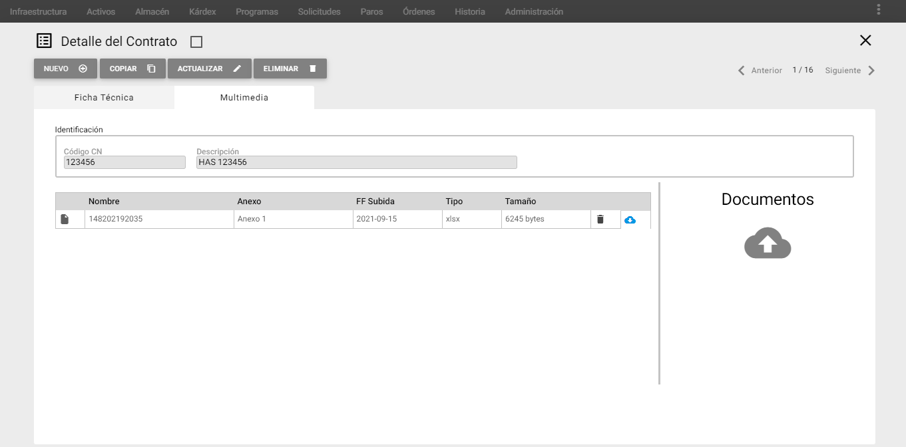 Imagen 49. Descargar archivo
Tipos de Trabajo (TT)
El Tipo de Trabajo especifica la especialidad o especialidades técnicas: Mecánica, Eléctrica, Instrumentación/Electrónica u Otras requeridas para satisfacer el objetivo de una Órden de Trabajo.
 Imagen 50. Visor Tipos de Trabajo
Imagen 50. Visor Tipos de Trabajo
En una Órden de Trabajo puede haberse definido una de estas especialidades o algunas de ellas o todas, ello es posible en el marco de un aplicativo Clase Mundial.
>Nota: Esta tabla no es modificable a no ser que se trate de un usuario que tenga los respectivos permisos administrativos avanzados, en cuyo caso , el usuario deberá definir el mismo número de Tipos de Trabajo con el que cuenta la tabla original. Si se ha modificado esta tabla, su manejo y tales criterios ya no son garantizados por el aplicativo. Por estas razones WIN Software recomienda no modificar la tabla de Tipos de Trabajo. En caso de duda por favor comunicarse con el área de servicio al Cliente de WIN Software.
Tipos de Mantenimiento (TM)
Dependiendo de las actividades técnicas a realizar, esta tabla contiene los distintos tipos de Mantenimiento comúnmente aceptados e incluso definidos en la norma ISO 14224. Se encuentran tanto aquellos tipos de Mantenimiento que son reactivos, como los correctivos, otros que son proactivos y algunos Otros especiales que dependen de la táctica o estrategia de la organización de Mantenimiento, WIN Software recomienda no modificar la tabla de Tipos de Mantenimiento. Existe la forma de definir variaciones de los tipos de Mantenimiento y enlazarse con los Tipos de Actividad para lograr combinaciones a la medida.
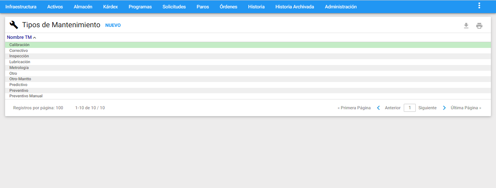 Imagen 51. Visor Tipos de Mantenimiento
Tipos de Actividad (TA)
El objetivo de esta tabla es registrar otros Tipos de Actividad. Los Tipos de Actividad se usan para caracterizar aún más las Órdenes de Trabajo. Algunos corresponden a Actividades de Mantenimiento como: Correctivo, Preventivo, Preventivo Manual, Predictivo, Inspección, Calibración; pero otros corresponden a actividades que no constituyen mantenimiento formalmente pero sí consumen recursos apreciables de los propios de Mantenimiento: Horas Hombre de Mano de Obra, Materiales y Repuestos y/o Servicios Externos.
El Tipo de Actividad puede ser un criterio más de selección y de búsqueda, en estudios sobre Órdenes de Trabajo e Historia de Mantenimiento.
AM suministra una tabla de Tipos de Actividad que incluye una recopilación interesante de ellas que el usuario puede enriquecer adicionando nuevas o mdificando las existentes.
Algunos ejemplos de Tipos de Actividad que están preconfiguradas en AM son las siguientes:
- EQ-Contrato
- EQ-Garantía
- EQ- Instalación/Montaje
- EQ-Inversión
- EQ-Mejoras distintas de Mntto
- EQ-Overhaul
- EQ-Puesta a punto
- EQ-Recuperación de Activos
- EQ-Reposición de Equipos
- EQ-Revisión / Inspección
- EQ-Servicios Aux Producción
- IC-Comunicaciones
- IL-Dotación Habitaciones
- IL-Iluminación
- IL-Jardinería
- IL-Mejoras / Modificaciones
- IL-Obra Civil
- IL-Pintura/ Plomería
- IL-Señalización
- IL-Ventanería
- IT-Informática Hardware
- IT-Informática Redes
- IT-Informática Software
- IT-Instalación / Montaje de HW
- MN- Mantto
- TV-Ajustes y Ensambles
- TV-Carpintería
- TV-Limpieza
- TV-Mecanizado
- TV-Obra Civil
- TV-Telefonía
- TV-Trabajo Sobre Repuestos
Donde los dos primeros caracteres significan:
- EQ Otros Trabajos sobre Equipos.
- IC Informática y Comunicaciones.
- IL Trabajos sobre Instalaciones Locativas.
- IT Informática y Tecnología.
- MN Trabajos que constituyen Mantenimiento.
- TV Trabajos Varios
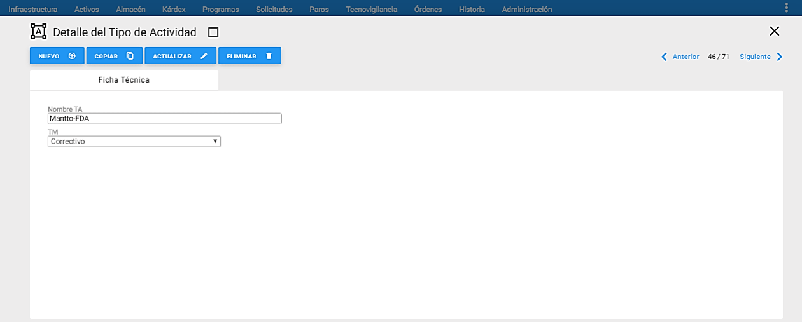 Imagen 52. Ventana Detalle Tipos de Actividad
En la gráfica anterior, Ventana Detalle del Tipo de Actividad, se aprecian sus componentes y sus respectivos contenidos. Se encuentra la información relevante al Tipo de Actividad seleccionado en el Visor.
A continuación se describen los campos que componen el registro, sobre cada campo se da una breve explicación:
Nombre TA: En este campo se registra el Tipo de Actividad. La capacidad del campo es de 50 caracteres.
Tipo de Mantenimiento (TM): Indica el Tipo de Mantenimiento al cual se relaciona el Tipo de Actividad registrado: Preventivo, Preventivo Manual, Predictivo, Inspección, Lubricación, Metrología, Correctivo, Otro-Mantto, Otro.
Almacenes
Es la tabla de Infraestructura en la que se definen los distintos Almacenes, Bodegas o Depósitos de: Materias Primas, Materiales y Repuestos o elementos generales de una organización.
El AM PRO es un sistema multicompañía y multialmacén, por tanto es posible definir múltiples almacenes en la base de datos para cada compañía.
El AM ST es un sistema monocompañía y multialmacén.
 Imagen 53. Ventana Detalle IF Almacén
Imagen 53. Ventana Detalle IF Almacén
En la gráfica anterior, Ventana Almacén, se aprecian sus componentes y sus respectivos contenidos. En la ventana Detalle de Almacenes se encuentra la información relevante al Almacén seleccionado en el Visor.
A continuación se describen los campos que componen el registro:
Código: Este campo recibe un número de máximo dos dígitos, con el cual se identifica la bodega o Almacén de Equipos o repuestos.
Nombre: Se define el nombre del Almacén.
Ubicación física: Indica el sitio donde está ubicado el Almacén o bodega. Esta Ubicación Física se selecciona de la tabla de Ubicaciones Físicas previamente definidas.
Tipo Costeo: Aquí se define la forma como se costean los ítems, repuestos o materiales en el Almacén actual. Existen dos opciones:
La primera consiste en valorizar todos los ítems de un código según el costo del último reaprovisionamiento, en este caso se habla de valorizar por Último Ingreso.
La segunda opción Promedio Ponderado, consiste en valorizar todo el conjunto de ítems de un mismo código mediante el cálculo sencillo de un promedio ponderado.
Utilizar uno u otro método depende de si el Almacén es contable o no. Se recomienda utilizar el método de Promedio Ponderado si se trata de un Almacén contable. Si se trata de un Almacén no contable, es decir, cuando se considera que los ítems que lo conforman, al ser trasladados a esta bodega ya fueron consumidos contablemente, entonces se recomienda usar el método de costeo por Último Ingreso, en cuyo caso la elaboración y proyección de presupuestos puede arrojar información más realista, al tiempo que no existe el riesgo de la revalorización contable de los mismos ítems.
Tipo Almacén: Esta opción, de tipo combo, muestra dos ítems: Contable y No Contable.
Esta funcionalidad, permitirá a futuro definir si el Almacén seleccionado es Contable, es decir, tendrá una interacción con el sistema contable de la organización la cual generara un costo o factura de venta; y No Contable hace referencia al Almacén que guarda el inventario de Repuestos para simple funcionalidad del sistema AM. Por defecto, cuando se crea un almacén el tipo se define con NO CONTABLE.
Almacén Corporativo: Este switche indica si el almacén al cual se está haciendo referencia es el corporativo. Cuando se define si es el almacén corporativo, se declara con la palabra “SI”, en caso contrario se define con la palabra “NO”. Para definir el almacén corporativo se realiza en el módulo de Administración, en la opción de Valores por defecto, en la etiqueta General, existe la opción de “Almacén corporativo” con un combo desplegable para escoger cual es el almacén.
Comentario: Aquí se ingresan los comentarios sobre el Almacén, Centro de Costo o sobre un Cliente, representado por su Centro de Costo.
Unidades de Medida
Es la tabla que se encarga de la definición de los distintos tipos de unidades de medición con el objeto de que se estandarice su uso en dos aspectos: nombre de la unidad y su abreviatura. Las Unidades de Medida están agrupadas por el concepto Tipo, en el que se establece su categoría de medición: Longitud, superficie, volumen, peso y otra.
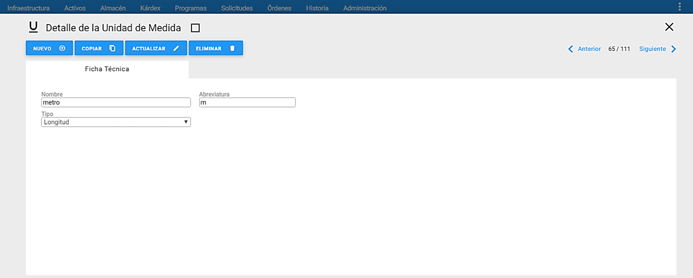 Imagen 54. Ventana Detalle IF Unidade de Medida
En la gráfica anterior, Ventana Detalle Unidades de Medida, se aprecian sus componentes y sus respectivos contenidos. Indica la información relevante a la Unidad de Medida seleccionada en el Visor.
A continuación se describen los campos que componen el registro:
Nombre: En este campo se escribe la nueva unidad de medida que se quiere definir.
Abreviatura: En este campo se detalla la abreviatura que identifica la unidad de medida que se está definiendo.
Tipo: De acuerdo con la nueva unidad de medida se debe seleccionar el si corresponde a longitud, superficie, volumen, peso u otra.
Monedas
Es la tabla en la que se establecen las distintas monedas a ser usadas en el sistema cuando se hace referencia al costo de compra o al costo vigente, de un Activo. Hasta este momento se trata de un medio de documentación sobre el costo indicado para Activos/Equipos.
Imagen 55. Ventana Detalle IF Moneda
En la gráfica anterior, Ventana Detalle Monedas, se aprecian sus componentes y sus respectivos contenidos. Indica la información relevante a la Moneda seleccionada en el Visor.
A continuación se describen los campos que componen el registro:
Nombre: En este campo se registra el nombre de la moneda.
Abreviatura: En este campo se establece la abreviatura que identifica la moneda
Contadores
En esta tabla de Infraestructura se registran los medidores o contadores de estado, que reflejan la cantidad de trabajo realizado por un Activo/Equipo. Los medidores o contadores más comunes son los horómetros, que reflejan en todo momento la cantidad en horas de trabajo realizadas, por el Activo/Equipo que lo posee. De igual forma, en la mayoría de los automotores existe otro medidor de uso bastante común, es el contador de Kilómetros o Millas rodadas, que refleja la distancia recorrida a partir de un punto relativo, de interés para su propietario.
Cuando el sistema se inicializa, en la tabla de Contadores aparece una propuesta de contadores básicos, que puede ser modificada o complementada de acuerdo al interés de la compañía usuaria.
 Imagen 56. Ventana Detalle IF Contador
Imagen 56. Ventana Detalle IF Contador
En la gráfica anterior, Ventana Detalle Contadores, se aprecian sus componentes y sus respectivos contenidos. Indica la información relevante al Contador seleccionado en el Visor.
A continuación se describe el campo que compone el registro:
Nombre del Contador: En este campo se registra el nombre del contador
Características
Es una tabla conformada por los nombres de las Características propias de los Activos/Equipos o de los Repuestos, que se utilizan al definir la porción variable de su ficha técnica. En esta tabla sólo se ingresan los nombres de las Características o los parámetros-características de los Activos/Equipos y Repuestos. Se cuenta con 30 dígitos para ingresar la característica deseada.
El valor y las unidades correspondientes a cada Característica se ingresan en la ficha técnica del Activo o del Repuesto.
La gama de Características depende del tipo de equipamiento de la empresa, por tanto es una tabla modificable o adecuable con gran facilidad.
Existen varios tipos de Características que se configuran según el equipo, al definir su ficha técnica. El primer tipo, el más común, corresponde a las de tipo Informativo o No Controlable, en el que van acompañadas, en la ficha técnica, por un valor nominal y una unidad. El segundo tipo corresponde a las Controlables Cuantitativas, en el que además del valor nominal y una unidad, se acompañan por un rango de Tolerancia permitido.
Cuando se trata de Características de Repuestos solo existe un tipo de ellas y son las de tipo Informativo.
 Imagen 57. Ventana Detalle IF Característica
Imagen 57. Ventana Detalle IF Característica
En la gráfica anterior, Ventana Detalle Características, se aprecian sus componentes y sus contenidos.Indica la información relevante a la Característica seleccionada en el Visor.
A continuación se describe el campo que compone el registro.
Nombre de la Característica: En este campo se define la característica. La Caracterítica es a la vez, la clave de la tabla conformadas por los parámetros-características requeridos por los Equipos propios de la empresa.
Características Biomédicas
Es una tabla conformada por los nombres de las Características propias de los Activos o Equipos, que se utilizan al definir la porción variable de Info. Biomédica en su ficha técnica. En esta tabla sólo se ingresan los nombres de las Características. Se cuenta con 30 dígitos para ingresar la característica deseada.
El valor o nombre, la unidad de medida correspondiente y la clasificación se relacionan a cada Característica en la ficha técnica del Activo o Equipo en la porción de Info. Biomédica.
La gama de Características depende del tipo de equipamiento de la empresa, por tanto es una tabla modificable o adecuable con gran facilidad.
Se recomienda utilizar esta tabla únicamente para empresas o compañías que sean Biomédicas.
Existen varios tipos de Características que se configuran según el equipo, al definir su ficha técnica. El primer tipo, el más común, corresponde a las de tipo Informativo. El segundo tipo corresponde a las de tipo instalación. El tercer tipo corresponde a las de tipo apoyo. El cuarto tipo corresponde a las de tipo Técnicas. Finalmente, las del quinto tipo corresponde a las de funcionamiento. Todas las características biomédicas van acompañadas de un valor o nombre y la unidad de medida.
 Imagen 58. Ventana Detalle Característica Biomédica
Imagen 58. Ventana Detalle Característica Biomédica
En la gráfica anterior, Ventana Detalle de la Característica Biomédica, se aprecian sus componentes y sus respectivos contenidos. Se encuentra la información relevante a la Característica Biomédica seleccionada en el Visor.
A continuación se describen los campos que componen el registro, sobre cada campo se da una breve explicación:
Nombre: En este campo se define el nombre de la característica biomédica.
Estado: Indica el estado en que se encuentra la Característica Biomédica: Activo o Inactivo.
Riesgos
Los Riesgos corresponden a los riesgos asociados a cada uno de los Activos/Equipos que se encuentran definidos en el módulo de Activos.
Imagen 59. Ventana Detalle del Riesgo
En la gráfica anterior, Ventana Detalle del Riesgo, se aprecian sus componentes y sus respectivos contenidos.Se encuentra la información relevante al Riesgo seleccionado en el Visor.
A continuación se describen los campos que componen el registro, sobre cada campo se da una breve explicación:
Nombre: En este campo se define el nombre del riesgo.
Magnitudes
El objetivo de esta nueva tabla es registrar las magnitudes que después se asociarán a los Activos, que se utilizan al definir la porción de Metrología. En esta tabla sólo se registrarán los nombres de la Magnitud. Se cuenta con 60 dígitos para ingresar la magnitud deseada.
 Imagen 60. Ventana Detalle Magnitud
Imagen 60. Ventana Detalle Magnitud
En la gráfica anterior, Ventana Detalle de la Magnitud, se aprecian sus componentes y sus respectivos contenidos. Se encuentra la información relevante a la Magnitud seleccionada en el Visor.
A continuación se describen los campos que componen el registro, sobre cada campo se da una breve explicación:
Nombre de la Magnitud: En este campo se define el nombre de la magnitud.
Otros Conceptos de Costo
El objetivo de esta tabla es registrar aquellas actividades complementarias que generan costos en una OT, que son indirectos respecto a la misma y que son facturados por un ente externo. Este es el caso, por ejemplo, de los costos de transporte necesarios para llevar a mecanizar una pieza, o para arrendar y desplazar un equipo o un instrumento, o para desplazar a un ingeniero y cubrir sus gastos de viaje y viáticos.
También se usa para cargar a una OT, costos de trabajos eventuales, no rutinarios, especializados, de costo relativamente bajo, que no ameritan la generación de una OT. Algunos ejemplos son: la cepillada de una campana o una rotación de llantas, labores que se ejecutan como parte de una OT mecánica.
 Imagen 61. Ventana Detalle Otros Concepto de Costo
Imagen 61. Ventana Detalle Otros Concepto de Costo
En la gráfica anterior, Ventana Detalle del Otro Concepto de Costo, se aprecian sus componentes y sus respectivos contenidos.
A continuación se describen los campos que componen el registro, sobre cada campo se da una breve explicación:
Código: Se define un código o indicativo único para el otro concepto de costo, que puede ser un consecutivo. Ejemplo: OC-001, el cual OC corresponde a las abreviaturas de Otro Concepto y 001 corresponde al primer registro.
Nombre: En este campo se escribe el nombre del Concepto generador de costo distinto de Mano de Obra y de Materiales y Repuestos. Es una descripción corta de 25 caracteres. Algunos ejemplos de estos Otros Conceptos pueden ser: Transporte Terrestre de un Equipo, Transporte y Viáticos de un operador que se trasladó desde otra ciudad, mecanizado de una pieza sencilla, etc.
Valor Unitario: Este campo indica el costo unitario de la actividad. Solamente se debe registrar este valor si corresponde a una tarifa o precio que se ha pactado con el proveedor, y que se ejecuta rutinariamente. Es posible dejar este valor en blanco y al momento de cargarlo a una Órden de Trabajo, registrar manualmente el valor.
Unidad de Medida (UM): Este campo es para seleccionar la unidad de medida que corresponde al Otro Concepto de Costo. Se elige una de las disponibles que se descuelgan de la lista.
Informativo Este switche permite activar el Otro Concepto de Costo como campo Informativo, lo que quiere decir que NO se genera costo. En caso de querer cuantificar esta actividad no se debe activar el switche.
Tipo de Trabajo (TT): Indica el Tipo de Trabajo al cual se relaciona el Concepto de Costo registrado: Elc (eléctrico), Mec (mecánico), I/E (instrumentación y electrónica), Otr (otros).
El Tipo de Trabajo cualifica el valor del costo permitiendo que se cargue en una fila y en una columna precisamente definida en la tabla de Gasto Real en la Órden de Trabajo.
Causas de OT Pendiente
Aquí se registran las posibles Causas por las que la ejecución de una Órden de Trabajo es suspendida o pospuesta. En el sistema se proponen las siguientes causas de pendiente:
- M - Pendiente Por Mano De Obra
- O - Pendiente Por Otros Conceptos
- P - Pendiente Por Programación
- R - Pendiente Por Repuestos
- S - Pendiente Por Presupuesto
Estos valores predefinidos pueden ser modificados o complementados por el usuario, según su cultura técnica y organizacional.
 Imagen 62. Ventana Detalle Causa de OT Pendiente
Imagen 62. Ventana Detalle Causa de OT Pendiente
En la gráfica anterior, Ventana Detalle de la Causa de OT Pendiente, se aprecian sus componentes y sus respectivos contenidos. Se encuentra la información relevante a la Causa de Pendiente seleccionada en el Visor.
A continuación se describe el campo que compone el registro:
Nombre: En este campo se escribe la Causa por la que se puede detener la ejecución de una OT. Se recomienda nombrar la causa de pendiente iniciando con una letra que la distinga de las demás, continuar con un guion y a continuación el nombre de la causa. La capacidad del campo es de 30 caracteres.
Causas de Cierre de OT
Es la tabla en la que se registran las posibles Causas de Cierre de una Órden de Trabajo (ya sea Ejecutada o No Ejecutada). También es una tabla con contenido propuesto por el aplicativo, que puede ser complementada o adecuada a gusto del usuario.
La primera que se define se refiere a las Órdenes de Trabajo Cerradas Ejecutadas; todas las que siguen son Causas de Cierre para Órdenes de Trabajo Cerradas No Ejecutadas.
En el sistema se incluyen las siguientes Causas de Cierre:
CAUSAS DE CIERRE
- OT Ejecutada
- Cambio por otra OT
- Error en la programación
- Equipo fuera de servicio
- Equipo no disponible
- Cierre de mes
- Labor no requerida
- Otra causa
Nota: La Causa de Cierre “OT Ejecutada” es implícita a las OT cerradas ejecutadas. Esta Causa de Cierre no es editable.
 Imagen 63. Ventana Detalle Causa de Cierre de OT
Imagen 63. Ventana Detalle Causa de Cierre de OT
En la gráfica anterior, Ventana Detalle de la Causa de Cierre de OT, se aprecian sus componentes y sus respectivos contenidos. Se encuentra la información relevante a la Causa de Cierre seleccionada en el Visor.
A continuación se describen los campos que componen el registro, sobre cada campo se da una breve explicación:
Nombre: En este campo se escribe la posible Causa de Cierre de una Orden de Trabajo.
Tipo:En este campo están predeterminadas dos opciones: Órden de Trabajo Ejecutada y Orden de Trabajo No Ejecutada.
Acciones Técnicas
Es la tabla que contiene un listado de Acciones Técnicas frecuentes en un área de Mantenimiento. Con la información contenida en esta tabla se pretende describir, breve pero concretamente, la actividad general a ser realizada en una Órden de Trabajo. Se suministra por defecto un conjunto de verbos en infinitivo que denotan Acciones Técnicas de Mantenimiento. El usuario puede utilizar tales verbos para definir Acciones Técnicas detalladas con base en ellos.
Una vez definidas las Acciones Técnicas, es posible incluir una o varias de ellas, asociadas a una causa, en la tabla de Causas de Falla o asociadas a un efecto, en la tabla de Efectos de Falla.
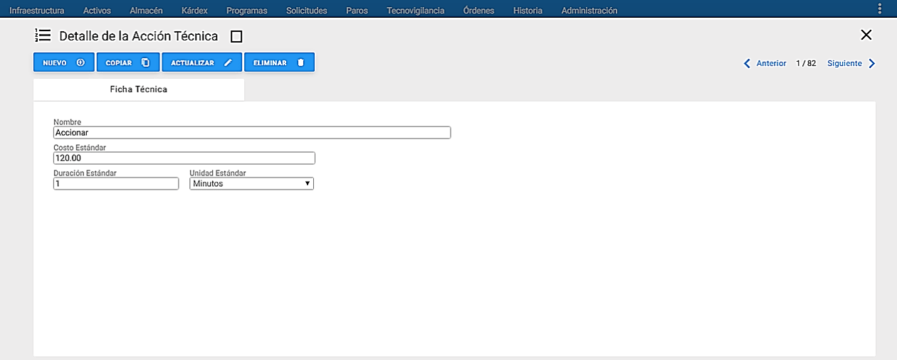 Imagen 64. Ventana Detalle Acción Técnica
En la gráfica anterior, Ventana Detalle de la Acción Técnica, se aprecian sus componentes y sus respectivos contenidos. Se encuentra la información relevante a la Acción Técnica seleccionada en el Visor.
A continuación se describen los campos que componen el registro.
Nombre: Este campo tiene capacidad de 80 caracteres y se describe la Acción Técnica.
Costo Estándar: En este campo se registra el costo estándar de la Acción Técnica.
Duración Estándar: Se define la duración estándar de ejecución de esa Acción Técnica.
Unidad Estándar: Se define la unidad de tiempo estándar correspondiente en días, horas y minutos.
Causas de Falla
Esta tabla de la Infraestructura pretende definir las Causas reales de Falla, que normalmente sólo se detectan a través de una inspección previa.
En ella se han propuesto a manera de guía, algunas Causas de Falla, agrupadas en Básicas (B) e Inmediatas (I), según orientación de la norma ISO-14224. Se considera que de todas maneras la cultura técnica del área de mantenimiento y su experiencia en equipamiento y procesos específicos pueden variar y/o complementar la propuesta que hace AM.
BASICAS (B):
- BAD-FALLAS ADMINISTRATIVAS
- BAD-Error Administrativo
- BAD-Error de Documentación
- BFI-FALLAS FABRICACIÓN / INSTALACIÓN
- BFI-Error de Fabricación
- BFI-Error de Instalación / Montaje
- BOP-FALLAS OPERACIONALES
- BOP-Desgaste o rotura esperada
- BOP-Error de Mantenimiento
- BOP-Error de Operación
- BOP-Servicio fuera de diseño
- BDI-FALLAS DISEÑO
- BDI-Capacidad Inadecuada
- BDI-Diseño Inadecuado
- BDI-Material Inadecuado
- BMI-FALLAS MISCELANEAS
- BMI-Desconocida
- BMI-Miscelánea
- BMI-Oculta
INMEDIATAS (I):
- IEL-FALLAS ELECTRICAS
- IEL-Circuito Abierto
- IEL-Corto Circuito
- IEL-Falla de Energía / Voltaje
- IEL-Falla Tierra / Aislamiento
- IEL-Sin / Bajo Energía / Voltaje
- IIN-FALLAS INSTRUMENTOS
- IIN-Desajustado
- IIN- Falla Común (falla redundante)
- IIN-Falla en Control
- IIN-No Señal / Ind / Alarma
- IIN-Señal / Ind / Alarma incorrecta
- IIN-Software
- IMI-FALLAS MISCELANEAS
- IMI-Desconocida
- IMI-Miscelánea
- IMI-Oculta
- IIE-FALLAS EXTERNAS
- IIE-Bloqueado / Taponado
- IIE-Contaminación
- IME-FALLAS MECANICAS
- IME-Bloqueado / Taponado
- IME-Deformación
- IME-Desalineamiento
- IME-Fuga
- IME-Pegado
- IME-Suelto
- IME-Vibración
- IMT-FALLAS MATERIAL
- IMT-Cavitación
- IMT-Corrosión
- IMT-Desgaste
- IMT-Erosión
- IMT-Fatiga
- IMT-Fractura
- IMT-Quemado
- IMT-Sobrecalentamiento
Los Prefijos significan:
- B: BÁSICAS
- I: INMEDIATAS
- AD: ADMINISTRATIVAS
- DI: DISENO
- FI: FABRICACION / INSTALACION
- MI: MISCELANEAS
- OP: OPERACIONALES
- EL: ELECTRICAS
- IE: EXTERNAS
- IN: INSTRUMENTOS
- ME: MECANICAS
- MT: MATERIAL
 Imagen 65. Ventana Detalle Causa de Falla
Imagen 65. Ventana Detalle Causa de Falla
En la gráfica anterior, Ventana Detalle de la Causa de Falla, se aprecian sus componentes y sus respectivos contenidos. En la ventana Detalle de Causas de Falla se encuentra la información relevante a la Causa de Falla seleccionada en el Visor.
A continuación se describen los campos que componen el registro.
Código: Se define un código o indicativo único para la causa de falla, que puede ser un consecutivo. Ejemplo: BOP-01, el cual BOP corresponde a las abreviaturas del grupo y prefijo al que pertenece la Causa de Falla y 01 corresponde al primer registro.
Nombre: En este campo se registra la Causa de Falla. Este campo tiene una capacidad para 40 caracteres.
Acciones Técnicas: Es posible asociar a cada Causa de Falla las Acciones Técnicas que más comúnmente se ejecutan para evitarla y solucionarla. Se debe tener en cuenta que las Acciones Técnicas por Efecto pretenden ubicar la causa y que las Acciones Técnicas por Causa pretenden evitar y solucionar la causa.
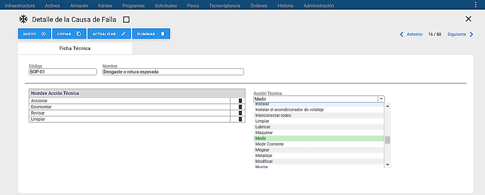 Imagen 66. Ventana Detalle Causa de Falla (Acción Técnica)
En la ventana anterior Acciones Tecnicas se seleccionan de la lista desplegable y se adicionan con el botón del signo Más .
Para desasociar una Acción Técnica de una Causa de Falla, se da clic en la Acción a desasociar y se presiona el icono de Eliminar .
Nota: Es importante tener en cuenta que las asociaciones y desasociaciones solo surten efecto al Actualizar o guardar la Causa de Falla.
Efectos de Falla
En esta tabla se describen las formas en que una falla se manifiesta inmediatamente después de ocurrir. Se trata de las consecuencias de la falla, de los efectos que esa falla ocasionó. Es un concepto que aunque ligado también a la falla es diametralmente opuesto a la causa. La causa, que normalmente es una sola, es la fuente de la falla, su origen. El efecto en cambio es la forma como se percibe, como se muestra la falla, una vez ha ocurrido. Hay efectos sonoros, otros son de rompimiento, otros son de generación de calor, otros de suspensión de la energía o de inoperancia o malfuncionamiento del equipo. La mayoría de ellos esconde, oculta o enmascara la causa real de la falla.
 Imagen 67. Ventana Detalle Efecto de Falla (Acción Técnica)
Imagen 67. Ventana Detalle Efecto de Falla (Acción Técnica)
A continuación se describen los campos que componen el registro:
Código: Se define un código o indicativo único para la causa de falla, que puede ser un consecutivo. Ejemplo: EF-01, el cual EF corresponde a las abreviaturas de Efecto de Falla y 01 corresponde al primer registro.
Nombre: En este campo se registra el Efecto de Falla. Este campo tiene una capacidad para 40 caracteres.
Acciones Técnicas: Es posible asociar a cada Efecto de Falla las Acciones Técnicas que más comúnmente se ejecutan como consecuencia de ésta. Como se menciona en las Causas de Falla, las Acciones Técnicas por Efecto pretenden “Ubicar la Causa” y las Acciones Técnicas por Causa pretenden “Solucionar la Causa”.
En la ventana anterior, las Acciones Técnicas se seleccionan de la lista despegable y se adicionan con el botón Más .
Para desasociar una Acción Técnica de un Efecto de Falla, se da clic en la Acción a desasociar y se presiona el icono de basura .
Nota: Es importante tener en cuenta que las asociaciones y desasociaciones solo surten efecto al Actualizar o guardar el Efecto de Falla.
Conceptos de Kárdex
Las transacciones pueden ser de Entrada, de Salida o de Ajuste de inventarios. Cada transacción de movimiento o concepto de Kárdex tiene asociado: un código o número distintivo (de 01 a 49, o, de 001 a 499, para las entradas por ejemplo) y otras condiciones de su uso.
 Imagen 67. Ventana Detalle IE Concepto de Kardex
Imagen 67. Ventana Detalle IE Concepto de Kardex
A continuación se describen los campos que componen el registro, sobre cada campo se da una breve explicación:
Almacén: Indica el Almacén al cual está asociado el Concepto de Kárdex. Este campo es seleccionado de una lista desplegable que contiene los Almacenes. Cada Almacén tiene su propio conjunto independiente de conceptos de Kárdex.
Número CP: Se refiere al código que identifica cada concepto. Por ejemplo, un número entre el 01 y 49 se puede establecer para conceptos de entrada, y del 51 al 99 para conceptos de salida. Mientras que el 50 para conceptos de ajuste.
Descripción de CP: Es una breve descripción, en treinta (30) caracteres, que define la transacción correspondiente al número seleccionado. Es un buen complemento el especificar la descripción de cada concepto como de Entrada, de Salida o de Ajuste (E/ S/, A/), al inicio de cada descripción del concepto.
Tipo: Se selecciona si el Concepto es de entrada, salida, ajuste o traslado.
Adicional, se encuentran tres opciones de definición del Concepto a modo switche, estas son:
-
¿Este Concepto de Kárdex requiere una OT válida? Se enmarca cuando se trata de una transacción de movimiento que requiere para su ejecución, una OT válida.
-
¿Este Concepto de Kárdex es el predeterminado? Es una opción para definir que este concepto se utiliza por defecto en una transacción.
-
¿Este Concepto de Kárdex Corresponde a ítems Suministrados por el Contratista? Es una opción para definir si el concepto corresponde a ítem que son suministrados por el contratista.
Subgrupo Conceptos de Kárdex
Se usa para seleccionar grupos de Conceptos de Kárdex que cumplen un conjunto de filtros o criterios. El objetivo de hacerlo es realizar un estudio posterior sobre los registros seleccionados en el subgrupo. Para ingresar a esta opción se debe dar clic al ícono de filtro ubicado en la parte superior derecha de la ventana Visor de Conceptos de Kárdex.
 Imagen 68. Ventana Visor IE Conceptos de Kardex
Imagen 68. Ventana Visor IE Conceptos de Kardex
AM mantiene activo cualquier subgrupo en cada módulo, hasta que el usuario lo modifique o restablezca los valores estándar.
Cada criterio trabaja en conjunto con los demás, con el operador intersección.
Cada criterio aparece inicializado en un valor global que permite mostrar todos los Conceptos de Kárdex. Lo que significa que de no escoger un criterio se obtiene como resultado del subgrupo el mismo conjunto completo de todos los Conceptos de Kárdex.
El programa permite entonces hacer selección de un grupo de Conceptos de Kárdex de acuerdo con los criterios seleccionados en la siguiente ventana:
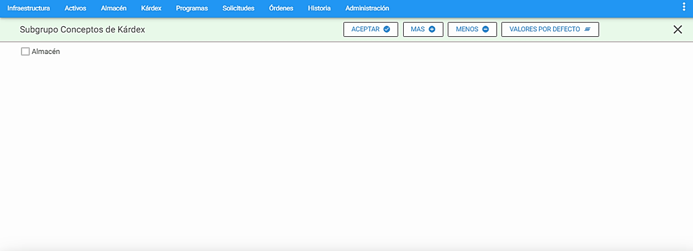 Imagen 69. Ventana IE Subgrupo Conceptos de Kardex
Los campos de datos que constituyen criterio de selección haciendo parte de la Ventana Subgrupo son los siguientes:
Almacén: Permite filtrar aquellos Conceptos de Kárdex que fueron asociados al almacén seleccionado. Lista los Almacenes creados en la tabla de Almacenes.
Nota: Es importante tener en cuenta que cuando se están realizando los subgrupos se pueden utilizar uno o varios de los criterios anteriores simultáneamente. Además es posible hacer unión de selecciones. Esto significa que inmediatamente después de haber realizado una selección es posible hacer otra y unir el resultado de las dos. Para ello, tras definir los criterios de la segunda selección se da un clic al botón Mas , en lugar de darlo al botón aceptar .
Operaciones
Permite registrar las Operaciones, requeridas en el proceso de elaboración de una Referencia. Estas Operaciones se van a referenciar como Operación Actual (Óp. Actual) en el módulo de Paros / Averías
 Imagen 70. Ventana Detalle Operación
Imagen 70. Ventana Detalle Operación
En la gráfica anterior, Ventana Detalle de la Operación, se aprecian sus componentes y sus espectivos contenidos, sobre cada campo se da una breve explicación:
Nombre: Es un campo de treinta caracteres que define la operación.
Estado: Una Operación puede encontrarse en uno de dos estados: Activa o Inactiva. El estado definirá si puede o no ser asociada con una Referencia.
Referencias
Permite registrar, cuando sea aplicable, las Referencias de Producto de la compañía usuaria. Tales Referencias de Producto se usan para complementar la información de un paro o una avería en el módulo de Paros / Averías. El objetivo es poder identificar detalladamente las circunstancias que rodearon el paro o la avería qué Referencia, y en qué operación particular del proceso se estaba elaborando.
A continuación se describen los campos que componen el registro, sobre cada campo se da una breve explicación:
Código: Es un alfanumérico único de 10 caracteres, que identifica la Referencia de producto.
Nombre: Contiene una descripción de la Referencia de Producto, cuenta con un espacio de 80 caracteres.
Estado: Una Referencia puede encontrarse en uno de dos estados: Activa o Inactiva.
Adicionar OP: Es posible adicionar una o varias Operaciones a una Referencia.
 Imagen 71. Ventana Detalle Referencia
Imagen 71. Ventana Detalle Referencia
En la ventana anterior Ventana Detalle de la Referencia se seleccionan las Operaciones de la lista despegable y se adicionan con el botón del signo Más a la lista de Operaciones asociadas a una Referencia.
Para desasociar una Operación, se ubica el cursor en la Operación a desasociar y se presiona el icono de Eliminar (basura) eliminar (basura).
Nota: Es importante tener en cuenta que las asociaciones y desasociaciones solo surten efecto al Actualizar o guardar la Referencia.
Tipos de Régimen
Esta tabla de Infraestructura contiene una lista predefinida en el sistema de los tipos de régimen que aplican en Colombia, que pueden asociarse a los Terceros de carácter informativo.
 Imagen 72. Ventana Detalle Tipo de Régimen
Imagen 72. Ventana Detalle Tipo de Régimen
Es posible, en la Tabla de Tipos de Régimen la parametrización de más tipos de régimen para la tabla de Terceros en el módulo de Infraestructura; con el objeto de darle individualidad a un responsable interno, empleado, responsable externo o una empresa para adecuar los propios o para adicionar nuevos. Cada tipo de régimen tiene una longitud de 15 caracteres alfanuméricos.
Estados
Esta tabla de Infraestructura contiene una lista de los “Estados” predefinidos en el sistema, que caracterizan los Activos u Objetos de Mantenimiento, las Órdenes de Trabajo, las Solicitudes de Servicio y Paros (FDA).
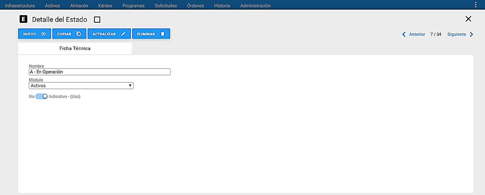 Imagen 73. Ventana Detalle Estado
Es posible, en la Tabla de Estados la parametrización de los estados de los módulos de Órdenes de Trabajo, Solicitudes de Servicio, Activos y Paros (FDA); con el objeto de darle individualidad a una empresa para adecuar los propios o para adicionar nuevos, que reflejen situaciones corporativas reales y necesarias. Cada estado tiene una longitud de 40 caracteres alfanuméricos, y puede ser de uno de dos tipos:
Estado de Activo: Descripción que se usa al definir un Activo o Equipo para personalizar su estado respecto a operatividad, actividad/inactividad y propiedad. Tener activa la opción de Indicativo-(Uso) indica que su estado se encuentra activo:
 Imagen 74. Ventana Detalle Estado - Activos
Imagen 74. Ventana Detalle Estado - Activos
Estado de Orden de Trabajo: Descripción que se usa para personalizar los estados en los que puede encontrarse una Órden de Trabajo. Se utiliza el campo de Indicativo- (Abreviatura) para especificar la abreviatura del Estado. Es posible crear nuevos estados de OT, ellos se consideran variaciones del estado de Ejecución (EJ). Existen siete Estados de OTs que no pueden ser eliminados ni modificados dado que se utilizan por defecto en la funcionalidad del sistema, estos son:
- EJ - En ejecución
- K - Cancelada o no Ejecutada
- P – Pendiente de Ejecución
- CE– Cerrada Ejecutada
- PL – Planeada
- PR– Programada
- CP – Cerrada Parcial
 Imagen 75. Ventana Detalle Estado - Órden de Trabajo
Imagen 75. Ventana Detalle Estado - Órden de Trabajo
Estado de Solicitud de Servicio: Descripción que se usa para personalizar los estados en los que puede encontrarse una Solicitud de Servicio. Se utiliza el campo de Indicativo-(Abreviatura) para especificar la abreviatura del Estado. Es posible crear nuevos estados de SS, ellos se consideran variaciones del estado En Análisis (AN). Existen siete Estados de SS que no pueden ser eiminados o modificados dado que se utilizan por defecto en la funcionalidad del sistema, estos son:
- AN - En Análisis
- AS - Asignada
- NE - Cerrada No Ejecutada
- CE - Cerrada Ejecutada
- CO - Cerrada con OT
- EJ - En Ejecución
- CP - Cerrada Parcial
 Imagen 76. Ventana Detalle Estado -Solicitud de Servicio
Imagen 76. Ventana Detalle Estado -Solicitud de Servicio
Estado de Paros (FDA): Descripción que se usa para personalizar los estados en los que puede encontrarse un Paro (FDA). Se utiliza el campo de Indicativo - (Abreviatura) para especificar la abreviatura del Estado. Es posible crear nuevos estados de FDA, ellos se consideran variaciones del estado En Análisis (AN). Existen siete Estados de FDA que no pueden ser eliminados ni modificados dado que se utilizan por defecto en la funcionalidad del sistema, estos son:
- AN - En Análisis
- EJ - En Ejecución
- CE - Cerrada Ejecutada
- CO - Cerrada con OT
- CP - Cerrada Parcial
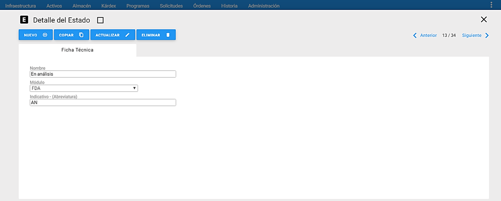 Imagen 77. Ventana Detalle Estado - Paros